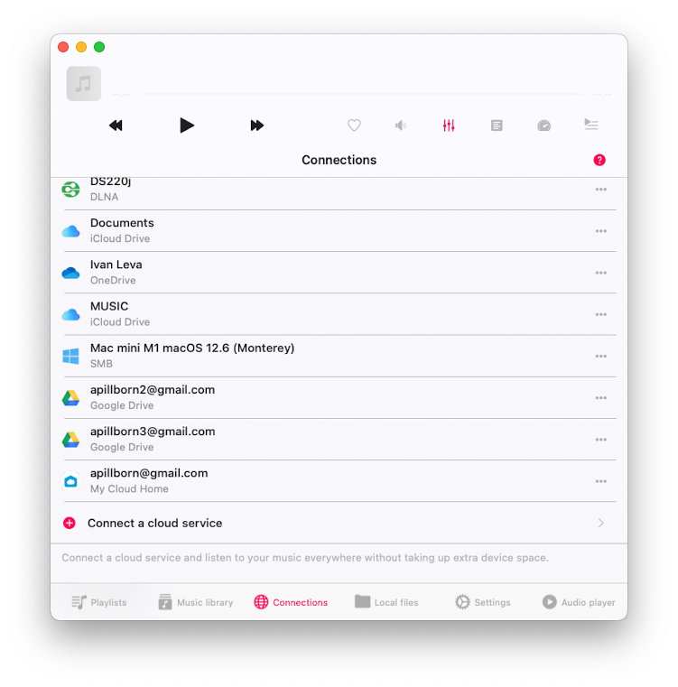
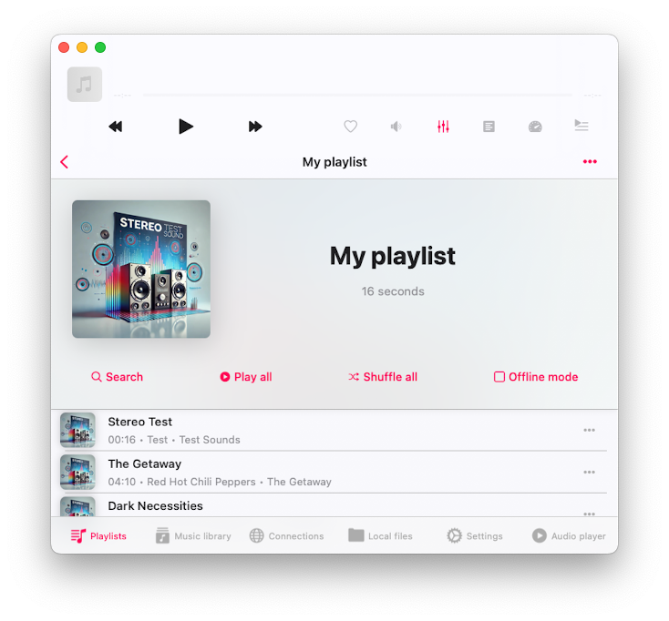
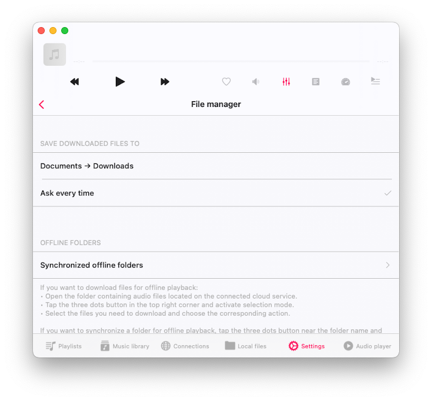
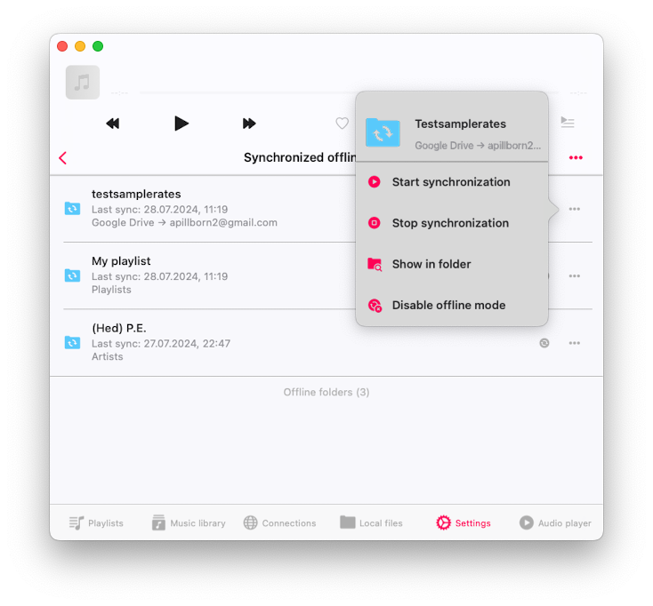
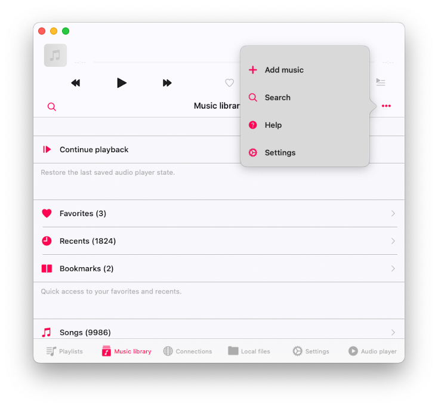
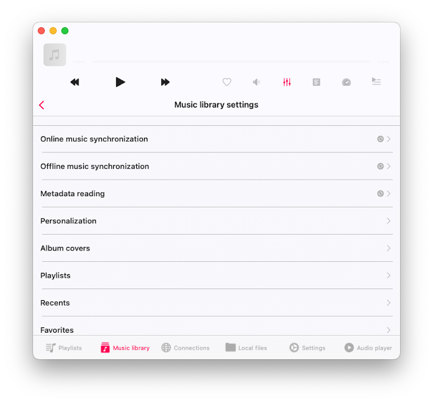
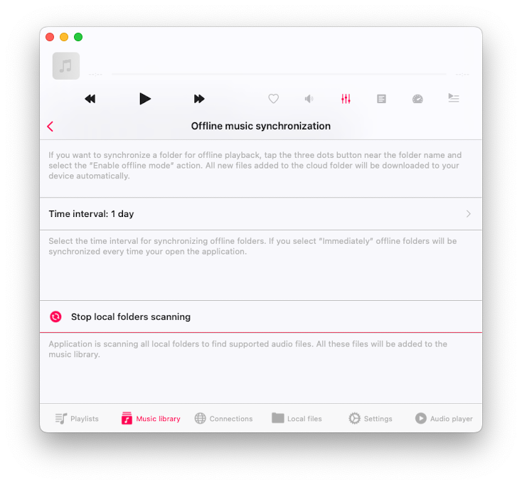
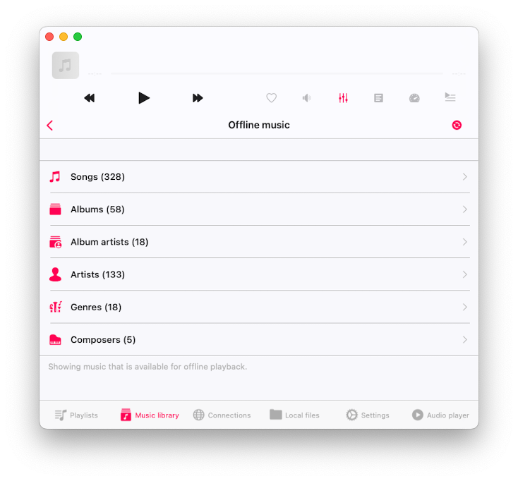
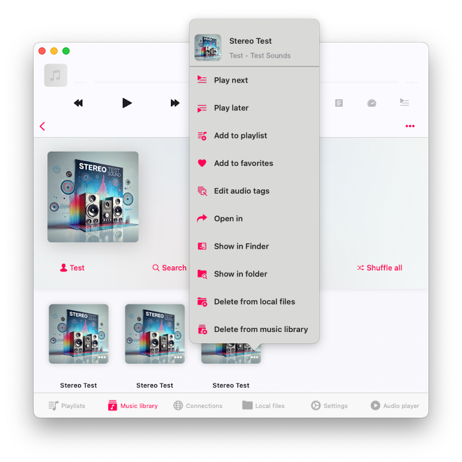
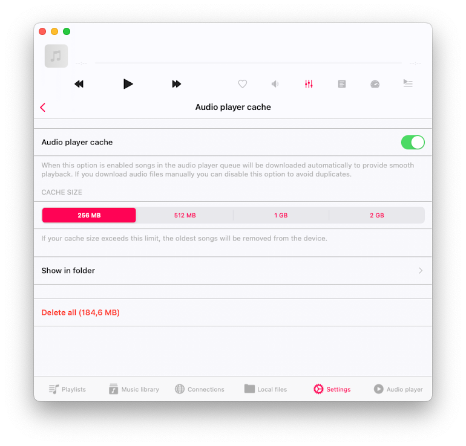

<div id="content-wrapper"><div class="ZL4A4N" data-hook="post-page"><div class=""><div class="" data-hook="slot-placeholder-TPAMultiSection_jvugchim.above-content-1" id="TPAMultiSection_jvugchim.above-content-1"></div></div><div class=""><div class="" data-hook="slot-placeholder-TPAMultiSection_jvugchim.above-content-2" id="TPAMultiSection_jvugchim.above-content-2"></div></div><div class="HcBlwg"><div class="zp8IQu"><div><div class="EcwjNF"><article class="tgMH9T" data-hook="post"><section class="UYw9XC" data-hook="post-hero-image"></section><div class="HW6ttf"><header class="PhCafd"><div class="PKQ95p"><div class="MbPQSQ"><div class="apmiGT" data-hook="post-title"><h1 class="H3vOVf" data-hook="post-title">Play Offline Music in Evermusic &amp; Flacbox: Download &amp; Sync from Cloud to Local Files</h1></div><div class="a5JqMF"><ul class="NtBDdE"><li class="MABqta"><div class="bZrSjY" style="width:32px;height:32px"><wow-image class="TI1b5D lR3yj5 fluid-avatar-image bok7Ik" data-bg-effect-name="" data-has-ssr-src="" data-image-info='{"displayMode":"fill","targetWidth":32,"targetHeight":32,"isSEOBot":false,"encoding":"AVIF","imageData":{"width":32,"height":32,"uri":"21260c_a693a1db9b5b41199827fb5e97aa89a1%7Emv2.png","name":"","displayMode":"fill"}}' data-motion-part="BG_IMG undefined" style="--wix-img-max-width:max(32px, 100%)"></wow-image></div><a class="IkAhjA" data-hook="profile-link" href="https://www.everappz.com/profile/serviceleshko/profile"><span data-hook="user-name">admin</span></a></li><li class="wBTynn"><span class="time-ago" data-hook="time-ago" title="Jul 28, 2024">Jul 28, 2024</span></li><li class="F56Ope"><span data-hook="time-to-read" title="4 min read">4 min read</span></li></ul><div class="hSZsuG"><button aria-label="More actions" aria-pressed="false" class="MHuRVq" data-hook="more-button" id="more-button-51c06f3c-90f4-49f4-8b00-091113663fbc" type="button"><svg aria-hidden="true" viewbox="0 0 19 19" width="19" xmlns="http://www.w3.org/2000/svg"><path d="M2.44398805,5.99973295 C1.62345525,5.9690612 0.980075653,5.28418875 1.00047182,4.46312144 C1.02086799,3.64205413 1.69745853,2.98998831 2.51850166,3.0001164 C3.33954478,3.01024449 3.99985313,3.67880182 4,4.50012255 C3.98424812,5.34399206 3.28763905,6.0153508 2.44398805,5.99973295 L2.44398805,5.99973295 Z M2.44398805,10.9997329 C1.62345525,10.9690612 0.980075653,10.2841888 1.00047182,9.46312144 C1.02086799,8.64205413 1.69745853,7.98998831 2.51850166,8.0001164 C3.33954478,8.01024449 3.99985313,8.67880182 4,9.50012255 C3.98424812,10.3439921 3.28763905,11.0153508 2.44398805,10.9997329 L2.44398805,10.9997329 Z M2.44398805,15.9997329 C1.62345525,15.9690612 0.980075653,15.2841888 1.00047182,14.4631214 C1.02086799,13.6420541 1.69745853,12.9899883 2.51850166,13.0001164 C3.33954478,13.0102445 3.99985313,13.6788018 4,14.5001225 C3.98424812,15.3439921 3.28763905,16.0153508 2.44398805,15.9997329 L2.44398805,15.9997329 Z"></path></svg></button></div></div></div><p class="NfKpG_">Updated: <span class="time-ago" data-hook="time-ago" title="Dec 6, 2024">Dec 6, 2024</span></p></div></header><section class="VQDdIN" data-hook="post-description"><div class="moHCnT"><div class="moHCnT"><div class="fTEXDR" data-rce-version="10.134.2"><div class="_8HJdY" data-id="content-viewer" dir="ltr" style="--ricos-text-color:rgb(var(--textParagraphColor-rgb));--ricos-text-color-tuple:var(--textParagraphColor-rgb);--ricos-action-color:rgb(var(--postButtonBackgroundColor));--ricos-action-color-tuple:var(--postButtonBackgroundColor);--ricos-background-color:rgb(var(--postBackgroundColor));--ricos-background-color-tuple:var(--postBackgroundColor);--ricos-fallback-color:rgb(0, 0, 0);--ricos-fallback-color-tuple:0, 0, 0;--ricos-settings-action-color:rgb(0, 0, 0);--ricos-settings-action-color-tuple:0, 0, 0;--ricos-text-on-action-color:rgb(var(--postButtonTextColor));--ricos-text-on-action-color-tuple:var(--postButtonTextColor);--ricos-action-color-fallback:rgb(0, 0, 0);--ricos-action-color-fallback-tuple:0, 0, 0;--ricos-custom-p-font-weight:var(--textParagraphFont-weight);--ricos-custom-p-font-style:var(--textParagraphFont-style);--ricos-custom-p-line-height:max(calc(var(--textParagraphFont-size) * 1.5), var(--textParagraphFont-line-height));--ricos-custom-p-font-size:var(--textParagraphFont-size);--ricos-custom-p-font-family:var(--textParagraphFont-family);--ricos-custom-p-text-decoration:var(--textParagraphFont-text-decoration);--ricos-custom-p-color:rgb(var(--textParagraphColor));--ricos-custom-h1-font-weight:var(--textH1Font-weight);--ricos-custom-h1-font-style:var(--textH1Font-style);--ricos-custom-h1-line-height:var(--textH1Font-line-height);--ricos-custom-h1-font-size:var(--textH1Font-size);--ricos-custom-h1-font-family:var(--textH1Font-family);--ricos-custom-h1-text-decoration:var(--textH1Font-text-decoration);--ricos-custom-h1-color:rgb(var(--textH1Color));--ricos-custom-h2-font-weight:var(--textH2Font-weight);--ricos-custom-h2-font-style:var(--textH2Font-style);--ricos-custom-h2-line-height:var(--textH2Font-line-height);--ricos-custom-h2-font-size:var(--textH2Font-size);--ricos-custom-h2-font-family:var(--textH2Font-family);--ricos-custom-h2-text-decoration:var(--textH2Font-text-decoration);--ricos-custom-h2-color:rgb(var(--textH2Color));--ricos-custom-h3-font-weight:var(--textH3Font-weight);--ricos-custom-h3-font-style:var(--textH3Font-style);--ricos-custom-h3-line-height:var(--textH3Font-line-height);--ricos-custom-h3-font-size:var(--textH3Font-size);--ricos-custom-h3-font-family:var(--textH3Font-family);--ricos-custom-h3-text-decoration:var(--textH3Font-text-decoration);--ricos-custom-h3-color:rgb(var(--textH3Color));--ricos-custom-h4-font-weight:var(--textH4Font-weight);--ricos-custom-h4-font-style:var(--textH4Font-style);--ricos-custom-h4-line-height:var(--textH4Font-line-height);--ricos-custom-h4-font-size:var(--textH4Font-size);--ricos-custom-h4-font-family:var(--textH4Font-family);--ricos-custom-h4-text-decoration:var(--textH4Font-text-decoration);--ricos-custom-h4-color:rgb(var(--textH4Color));--ricos-custom-h5-font-weight:var(--textH5Font-weight);--ricos-custom-h5-font-style:var(--textH5Font-style);--ricos-custom-h5-line-height:var(--textH5Font-line-height);--ricos-custom-h5-font-size:var(--textH5Font-size);--ricos-custom-h5-font-family:var(--textH5Font-family);--ricos-custom-h5-text-decoration:var(--textH5Font-text-decoration);--ricos-custom-h5-color:rgb(var(--textH5Color));--ricos-custom-h6-font-weight:var(--textH6Font-weight);--ricos-custom-h6-font-style:var(--textH6Font-style);--ricos-custom-h6-line-height:var(--textH6Font-line-height);--ricos-custom-h6-font-size:var(--textH6Font-size);--ricos-custom-h6-font-family:var(--textH6Font-family);--ricos-custom-h6-text-decoration:var(--textH6Font-text-decoration);--ricos-custom-h6-color:rgb(var(--textH6Color));--ricos-custom-quote-line-height:var(--textQuoteFont-line-height);--ricos-custom-quote-font-size:var(--textQuoteFont-size);--ricos-custom-quote-font-style:var(--textQuoteFont-style);--ricos-custom-quote-font-family:var(--textQuoteFont-family);--ricos-custom-quote-font-weight:var(--textQuoteFont-weight);--ricos-custom-quote-text-decoration:var(--textQuoteFont-text-decoration);--ricos-custom-quote-color:rgb(var(--textQuoteColor));--ricos-custom-quote-border-color:rgb(var(--textLinksAndHashtagsColor));--ricos-custom-quote-margin-inline-start:var(--ricosQuoteMarginInlineStart);--ricos-custom-code-block-line-height:1.5;--ricos-custom-link-font-style:inherit;--ricos-custom-link-font-weight:inherit;--ricos-custom-link-text-decoration:inherit;--ricos-custom-link-color:rgb(var(--textLinksAndHashtagsColor));--ricos-custom-hashtag-font-style:inherit;--ricos-custom-hashtag-font-weight:inherit;--ricos-custom-hashtag-text-decoration:inherit;--ricos-custom-hashtag-color:rgb(var(--textLinksAndHashtagsColor));--ricos-custom-footer-toolbar-padding-inline-start:var(--ricosFooterPadding);--ricos-custom-footer-toolbar-padding-inline-end:var(--ricosFooterPadding);--ricos-custom-editor-add-plugin-button-position-inline-start:var(--ricosAddPluginButtonStart);--ricos-breakout-normal-padding-start:var(--ricosNormalPadding);--ricos-breakout-normal-padding-end:var(--ricosNormalPadding);--ricos-breakout-full-width-padding-start:var(--ricosFullWidthPadding);--ricos-breakout-full-width-padding-end:var(--ricosFullWidthPadding)"><div class="WZmlO"><div data-hook="rcv-block-first" type="first"></div><div class="Qvle0"><div data-breakout="normal"><p class="_04qQG jtShe _6XZJW UGHSE" dir="auto" id="viewer-foo" style="padding-top:0px;padding-bottom:0px;line-height:max(0.8em, 2em)"><span class="mVzZr"><span style="font-size:16px"><span>In a world where music streaming dominates, there's still great value in having your favorite tracks available offline. Evermusic and Flacbox are powerful apps that allow you to download and sync music from your cloud storage directly to your local files, ensuring you have access to your tunes anytime, anywhere. In this guide, we'll walk you through the steps to effortlessly play offline music using Evermusic and Flacbox, making your music library accessible even without an internet connection.</span></span></span></p></div><div data-hook="rcv-block1" type="paragraph"></div><div data-breakout="normal"><div class="_04qQG jtShe _6XZJW UGHSE" dir="auto" id="viewer-sp6a4137119" style="padding-top:0px;padding-bottom:0px;line-height:max(0.8em, 2em)"><span class="mVzZr"><br role="presentation"/></span></div></div><div data-hook="rcv-block2" type="empty-line"></div><div data-breakout="normal"><p class="_04qQG jtShe _6XZJW UGHSE" dir="auto" id="viewer-1m039137143" style="padding-top:0px;padding-bottom:0px;line-height:max(0.8em, 2em)"><span class="mVzZr"><span style="font-size:16px"><span>Our music apps offer two primary methods for making music available offline: simple downloading and enabling offline mode for automatic synchronization.</span></span></span></p></div><div data-hook="rcv-block3" type="paragraph"></div><div data-breakout="normal"><div class="_04qQG jtShe _6XZJW UGHSE" dir="auto" id="viewer-wcnl8137458" style="padding-top:0px;padding-bottom:0px;line-height:max(0.8em, 2em)"><span class="mVzZr"><br role="presentation"/></span></div></div><div data-hook="rcv-block4" type="empty-line"></div><div data-breakout="normal"><p class="_04qQG jtShe _6XZJW UGHSE" dir="auto" id="viewer-7syvv137459" style="padding-top:0px;padding-bottom:0px;line-height:max(0.8em, 2em)"><span class="mVzZr"><strong style="font-weight:700"><span style="font-size:16px"><span>Step 1: Downloading Music for Offline Playback</span></span></strong></span></p></div><div data-hook="rcv-block5" type="paragraph"></div><div data-breakout="normal"><div class="_04qQG jtShe _6XZJW UGHSE" dir="auto" id="viewer-d4zd7137461" style="padding-top:0px;padding-bottom:0px;line-height:max(0.8em, 2em)"><span class="mVzZr"><br role="presentation"/></span></div></div><div data-hook="rcv-block6" type="empty-line"></div><div data-breakout="normal"><p class="_04qQG jtShe _6XZJW UGHSE" dir="auto" id="viewer-xrx65137462" style="padding-top:0px;padding-bottom:0px;line-height:max(0.8em, 2em)"><span class="mVzZr"><span style="font-size:16px"><span>1. </span></span><strong style="font-weight:700"><span style="font-size:16px"><span>Open the Connections Tab:</span></span></strong></span></p></div><div data-hook="rcv-block7" type="paragraph"></div><div data-breakout="normal"><p class="_04qQG jtShe _6XZJW UGHSE" dir="auto" id="viewer-xef3m137465" style="padding-top:0px;padding-bottom:0px;line-height:max(0.8em, 2em)"><span class="mVzZr"><span style="font-size:16px"><span>• Launch Evermusic or Flacbox.</span></span></span></p></div><div data-hook="rcv-block8" type="paragraph"></div><div data-breakout="normal"><p class="_04qQG jtShe _6XZJW UGHSE" dir="auto" id="viewer-7onyb137467" style="padding-top:0px;padding-bottom:0px;line-height:max(0.8em, 2em)"><span class="mVzZr"><span style="font-size:16px"><span>• Navigate to the “Connections” tab to see all connected cloud services.</span></span></span></p></div><div data-hook="rcv-block9" type="paragraph"></div><div data-breakout="normal"><div class="_42tfF" id="viewer-c1eow137829"><div class="_16CGD abqz1"><figure class="Z--PZ" data-hook="figure-IMAGE"><div class="_8c85B" data-hook="image-viewer"><div class="zPKNC uh6iL eO1yr" data-hook="image-viewer-c1eow137829" id="c1eow137829" style="--dim-height:761;--dim-width:751;--ricos-image-default-border-color:unset"><wow-image class="undefined P6NQu" data-animate-blur="" data-bg-effect-name="" data-has-ssr-src="" data-image-info='{"containerId":"c1eow137829","displayMode":"fill","isLQIP":true,"isSEOBot":false,"lqipTransition":"blur","encoding":"AVIF","imageData":{"width":751,"height":761,"uri":"21260c_58ca45ebd97542e7ba481981ebee453e~mv2.png","name":"","displayMode":"fill"}}' data-motion-part="BG_IMG" data-transitioned="" id="21260c_58ca45ebd97542e7ba481981ebee453e~mv2.png"></wow-image></div><button aria-label="Expand image" class="vB0h2" data-hook="image-expand-button" type="button"><svg class="vx8ar" viewbox="0 0 19 19" xmlns="http://www.w3.org/2000/svg"><path d="M15.071 8.371V4.585l-4.355 4.356a.2.2 0 0 1-.283 0l-.374-.374a.2.2 0 0 1 0-.283l4.356-4.355h-3.786a.2.2 0 0 1-.2-.2V3.2c0-.11.09-.2.2-.2H16v5.371a.2.2 0 0 1-.2.2h-.529a.2.2 0 0 1-.2-.2zm-6.5 6.9v.529a.2.2 0 0 1-.2.2H3v-5.371c0-.11.09-.2.2-.2h.529c.11 0 .2.09.2.2v3.786l4.355-4.356a.2.2 0 0 1 .283 0l.374.374a.2.2 0 0 1 0 .283L4.585 15.07h3.786c.11 0 .2.09.2.2z" fill="#000" fill-rule="nonzero"></path></svg></button></div></figure></div></div></div><div data-hook="rcv-block10" type="image"></div><div data-breakout="normal"><p class="_04qQG jtShe _6XZJW UGHSE" dir="auto" id="viewer-ma7cp137469" style="padding-top:0px;padding-bottom:0px;line-height:max(0.8em, 2em)"><span class="mVzZr"><span style="font-size:16px"><span>2. </span></span><strong style="font-weight:700"><span style="font-size:16px"><span>Open Cloud Service:</span></span></strong></span></p></div><div data-hook="rcv-block11" type="paragraph"></div><div data-breakout="normal"><p class="_04qQG jtShe _6XZJW UGHSE" dir="auto" id="viewer-dlz93137472" style="padding-top:0px;padding-bottom:0px;line-height:max(0.8em, 2em)"><span class="mVzZr"><span style="font-size:16px"><span>• Tap the icon of the cloud service you want to access.</span></span></span></p></div><div data-hook="rcv-block12" type="paragraph"></div><div data-breakout="normal"><p class="_04qQG jtShe _6XZJW UGHSE" dir="auto" id="viewer-kpqkv137474" style="padding-top:0px;padding-bottom:0px;line-height:max(0.8em, 2em)"><span class="mVzZr"><span style="font-size:16px"><span>• Browse to the folder containing the audio files you want to download.</span></span></span></p></div><div data-hook="rcv-block13" type="paragraph"></div><div data-breakout="normal"><div class="_04qQG jtShe _6XZJW UGHSE" dir="auto" id="viewer-88n4b138535" style="padding-top:0px;padding-bottom:0px;line-height:max(0.8em, 2em)"><span class="mVzZr"><br role="presentation"/></span></div></div><div data-hook="rcv-block14" type="empty-line"></div><div data-breakout="normal"><div class="_42tfF" id="viewer-uzo4i138534"><div class="_16CGD abqz1"><figure class="Z--PZ" data-hook="figure-IMAGE"><div class="_8c85B" data-hook="image-viewer"><div class="zPKNC uh6iL eO1yr" data-hook="image-viewer-uzo4i138534" id="uzo4i138534" style="--dim-height:761;--dim-width:751;--ricos-image-default-border-color:unset"><wow-image class="undefined P6NQu" data-animate-blur="" data-bg-effect-name="" data-has-ssr-src="" data-image-info='{"containerId":"uzo4i138534","displayMode":"fill","isLQIP":true,"isSEOBot":false,"lqipTransition":"blur","encoding":"AVIF","imageData":{"width":751,"height":761,"uri":"21260c_7d043f62fe25429ba3382edd59eb96a0~mv2.png","name":"","displayMode":"fill"}}' data-motion-part="BG_IMG" data-transitioned="" id="21260c_7d043f62fe25429ba3382edd59eb96a0~mv2.png"></wow-image></div><button aria-label="Expand image" class="vB0h2" data-hook="image-expand-button" type="button"><svg class="vx8ar" viewbox="0 0 19 19" xmlns="http://www.w3.org/2000/svg"><path d="M15.071 8.371V4.585l-4.355 4.356a.2.2 0 0 1-.283 0l-.374-.374a.2.2 0 0 1 0-.283l4.356-4.355h-3.786a.2.2 0 0 1-.2-.2V3.2c0-.11.09-.2.2-.2H16v5.371a.2.2 0 0 1-.2.2h-.529a.2.2 0 0 1-.2-.2zm-6.5 6.9v.529a.2.2 0 0 1-.2.2H3v-5.371c0-.11.09-.2.2-.2h.529c.11 0 .2.09.2.2v3.786l4.355-4.356a.2.2 0 0 1 .283 0l.374.374a.2.2 0 0 1 0 .283L4.585 15.07h3.786c.11 0 .2.09.2.2z" fill="#000" fill-rule="nonzero"></path></svg></button></div></figure></div></div></div><div data-hook="rcv-block15" type="image"></div><div data-breakout="normal"><div class="_04qQG jtShe _6XZJW UGHSE" dir="auto" id="viewer-d8xs7138536" style="padding-top:0px;padding-bottom:0px;line-height:max(0.8em, 2em)"><span class="mVzZr"><br role="presentation"/></span></div></div><div data-hook="rcv-block16" type="empty-line"></div><div data-breakout="normal"><p class="_04qQG jtShe _6XZJW UGHSE" dir="auto" id="viewer-vpsz4137476" style="padding-top:0px;padding-bottom:0px;line-height:max(0.8em, 2em)"><span class="mVzZr"><span style="font-size:16px"><span>3. </span></span><strong style="font-weight:700"><span style="font-size:16px"><span>Download Music:</span></span></strong></span></p></div><div data-hook="rcv-block17" type="paragraph"></div><div data-breakout="normal"><p class="_04qQG jtShe _6XZJW UGHSE" dir="auto" id="viewer-7dvv0137479" style="padding-top:0px;padding-bottom:0px;line-height:max(0.8em, 2em)"><span class="mVzZr"><span style="font-size:16px"><span>• Tap the three dots next to the folder name to open the more actions menu.</span></span></span></p></div><div data-hook="rcv-block18" type="paragraph"></div><div data-breakout="normal"><p class="_04qQG jtShe _6XZJW UGHSE" dir="auto" id="viewer-aih2m137481" style="padding-top:0px;padding-bottom:0px;line-height:max(0.8em, 2em)"><span class="mVzZr"><span style="font-size:16px"><span>• Select the </span></span><strong style="font-weight:700"><span style="font-size:16px"><span>Download</span></span></strong><span style="font-size:16px"><span> option to start downloading the folder for offline playback.</span></span></span></p></div><div data-hook="rcv-block19" type="paragraph"></div><div data-breakout="normal"><div class="_04qQG jtShe _6XZJW UGHSE" dir="auto" id="viewer-incrt139080" style="padding-top:0px;padding-bottom:0px;line-height:max(0.8em, 2em)"><span class="mVzZr"><br role="presentation"/></span></div></div><div data-hook="rcv-block20" type="empty-line"></div><div data-breakout="normal"><div class="_42tfF" id="viewer-vf1gy139079"><div class="_16CGD abqz1"><figure class="Z--PZ" data-hook="figure-IMAGE"><div class="_8c85B" data-hook="image-viewer"><div class="zPKNC uh6iL eO1yr" data-hook="image-viewer-vf1gy139079" id="vf1gy139079" style="--dim-height:910;--dim-width:751;--ricos-image-default-border-color:unset"><wow-image class="undefined P6NQu" data-animate-blur="" data-bg-effect-name="" data-has-ssr-src="" data-image-info='{"containerId":"vf1gy139079","displayMode":"fill","isLQIP":true,"isSEOBot":false,"lqipTransition":"blur","encoding":"AVIF","imageData":{"width":751,"height":910,"uri":"21260c_df16a0fb0bdf40e2b4f40bd78bdaaaee~mv2.png","name":"","displayMode":"fill"}}' data-motion-part="BG_IMG" data-transitioned="" id="21260c_df16a0fb0bdf40e2b4f40bd78bdaaaee~mv2.png"></wow-image></div><button aria-label="Expand image" class="vB0h2" data-hook="image-expand-button" type="button"><svg class="vx8ar" viewbox="0 0 19 19" xmlns="http://www.w3.org/2000/svg"><path d="M15.071 8.371V4.585l-4.355 4.356a.2.2 0 0 1-.283 0l-.374-.374a.2.2 0 0 1 0-.283l4.356-4.355h-3.786a.2.2 0 0 1-.2-.2V3.2c0-.11.09-.2.2-.2H16v5.371a.2.2 0 0 1-.2.2h-.529a.2.2 0 0 1-.2-.2zm-6.5 6.9v.529a.2.2 0 0 1-.2.2H3v-5.371c0-.11.09-.2.2-.2h.529c.11 0 .2.09.2.2v3.786l4.355-4.356a.2.2 0 0 1 .283 0l.374.374a.2.2 0 0 1 0 .283L4.585 15.07h3.786c.11 0 .2.09.2.2z" fill="#000" fill-rule="nonzero"></path></svg></button></div></figure></div></div></div><div data-hook="rcv-block21" type="image"></div><div data-breakout="normal"><div class="_04qQG jtShe _6XZJW UGHSE" dir="auto" id="viewer-z5f4v139081" style="padding-top:0px;padding-bottom:0px;line-height:max(0.8em, 2em)"><span class="mVzZr"><br role="presentation"/></span></div></div><div data-hook="rcv-block22" type="empty-line"></div><div data-breakout="normal"><p class="_04qQG jtShe _6XZJW UGHSE" dir="auto" id="viewer-pg86w137485" style="padding-top:0px;padding-bottom:0px;line-height:max(0.8em, 2em)"><span class="mVzZr"><span style="font-size:16px"><span>• The folder will be downloaded to the app’s Documents directory.</span></span></span></p></div><div data-hook="rcv-block23" type="paragraph"></div><div data-breakout="normal"><p class="_04qQG jtShe _6XZJW UGHSE" dir="auto" id="viewer-f6zsg137487" style="padding-top:0px;padding-bottom:0px;line-height:max(0.8em, 2em)"><span class="mVzZr"><span style="font-size:16px"><span>• To check download progress, go to the </span></span><strong style="font-weight:700"><span style="font-size:16px"><span>File Transfers</span></span></strong><span style="font-size:16px"><span> screen by tapping the spinning arrows icon in the top left corner of the Local Files screen.</span></span></span></p></div><div data-hook="rcv-block24" type="paragraph"></div><div data-breakout="normal"><div class="_04qQG jtShe _6XZJW UGHSE" dir="auto" id="viewer-rcxal139625" style="padding-top:0px;padding-bottom:0px;line-height:max(0.8em, 2em)"><span class="mVzZr"><br role="presentation"/></span></div></div><div data-hook="rcv-block25" type="empty-line"></div><div data-breakout="normal"><div class="_42tfF" id="viewer-98ks1139624"><div class="_16CGD abqz1"><figure class="Z--PZ" data-hook="figure-IMAGE"><div class="_8c85B" data-hook="image-viewer"><div class="zPKNC uh6iL eO1yr" data-hook="image-viewer-98ks1139624" id="98ks1139624" style="--dim-height:682;--dim-width:734;--ricos-image-default-border-color:unset"><wow-image class="undefined P6NQu" data-animate-blur="" data-bg-effect-name="" data-has-ssr-src="" data-image-info='{"containerId":"98ks1139624","displayMode":"fill","isLQIP":true,"isSEOBot":false,"lqipTransition":"blur","encoding":"AVIF","imageData":{"width":734,"height":682,"uri":"21260c_7296a80d22884cecb27092637c683999~mv2.png","name":"","displayMode":"fill"}}' data-motion-part="BG_IMG" id="21260c_7296a80d22884cecb27092637c683999~mv2.png"></wow-image></div><button aria-label="Expand image" class="vB0h2" data-hook="image-expand-button" type="button"><svg class="vx8ar" viewbox="0 0 19 19" xmlns="http://www.w3.org/2000/svg"><path d="M15.071 8.371V4.585l-4.355 4.356a.2.2 0 0 1-.283 0l-.374-.374a.2.2 0 0 1 0-.283l4.356-4.355h-3.786a.2.2 0 0 1-.2-.2V3.2c0-.11.09-.2.2-.2H16v5.371a.2.2 0 0 1-.2.2h-.529a.2.2 0 0 1-.2-.2zm-6.5 6.9v.529a.2.2 0 0 1-.2.2H3v-5.371c0-.11.09-.2.2-.2h.529c.11 0 .2.09.2.2v3.786l4.355-4.356a.2.2 0 0 1 .283 0l.374.374a.2.2 0 0 1 0 .283L4.585 15.07h3.786c.11 0 .2.09.2.2z" fill="#000" fill-rule="nonzero"></path></svg></button></div></figure></div></div></div><div data-hook="rcv-block26" type="image"></div><div data-breakout="normal"><div class="_04qQG jtShe _6XZJW UGHSE" dir="auto" id="viewer-bq3k9139626" style="padding-top:0px;padding-bottom:0px;line-height:max(0.8em, 2em)"><span class="mVzZr"><br role="presentation"/></span></div></div><div data-hook="rcv-block27" type="empty-line"></div><div data-breakout="normal"><p class="_04qQG jtShe _6XZJW UGHSE" dir="auto" id="viewer-15a0a137491" style="padding-top:0px;padding-bottom:0px;line-height:max(0.8em, 2em)"><span class="mVzZr"><span style="font-size:16px"><span>• You can find all downloaded files in the Documents - Downloads folder or your custom downloads folder if configured in the app settings.</span></span></span></p></div><div data-hook="rcv-block28" type="paragraph"></div><div data-breakout="normal"><div class="_04qQG jtShe _6XZJW UGHSE" dir="auto" id="viewer-ma0f6140708" style="padding-top:0px;padding-bottom:0px;line-height:max(0.8em, 2em)"><span class="mVzZr"><br role="presentation"/></span></div></div><div data-hook="rcv-block29" type="empty-line"></div><div data-breakout="normal"><div class="_42tfF" id="viewer-953fr140707"><div class="_16CGD abqz1"><figure class="Z--PZ" data-hook="figure-IMAGE"><div class="_8c85B" data-hook="image-viewer"><div class="zPKNC uh6iL eO1yr" data-hook="image-viewer-953fr140707" id="953fr140707" style="--dim-height:682;--dim-width:734;--ricos-image-default-border-color:unset"><wow-image class="undefined P6NQu" data-animate-blur="" data-bg-effect-name="" data-has-ssr-src="" data-image-info='{"containerId":"953fr140707","displayMode":"fill","isLQIP":true,"isSEOBot":false,"lqipTransition":"blur","encoding":"AVIF","imageData":{"width":734,"height":682,"uri":"21260c_38c1e7c5d6f44efa955f72c60c62b8b2~mv2.png","name":"","displayMode":"fill"}}' data-motion-part="BG_IMG" id="21260c_38c1e7c5d6f44efa955f72c60c62b8b2~mv2.png"></wow-image></div><button aria-label="Expand image" class="vB0h2" data-hook="image-expand-button" type="button"><svg class="vx8ar" viewbox="0 0 19 19" xmlns="http://www.w3.org/2000/svg"><path d="M15.071 8.371V4.585l-4.355 4.356a.2.2 0 0 1-.283 0l-.374-.374a.2.2 0 0 1 0-.283l4.356-4.355h-3.786a.2.2 0 0 1-.2-.2V3.2c0-.11.09-.2.2-.2H16v5.371a.2.2 0 0 1-.2.2h-.529a.2.2 0 0 1-.2-.2zm-6.5 6.9v.529a.2.2 0 0 1-.2.2H3v-5.371c0-.11.09-.2.2-.2h.529c.11 0 .2.09.2.2v3.786l4.355-4.356a.2.2 0 0 1 .283 0l.374.374a.2.2 0 0 1 0 .283L4.585 15.07h3.786c.11 0 .2.09.2.2z" fill="#000" fill-rule="nonzero"></path></svg></button></div></figure></div></div></div><div data-hook="rcv-block30" type="image"></div><div data-breakout="normal"><div class="_04qQG jtShe _6XZJW UGHSE" dir="auto" id="viewer-zzke2140709" style="padding-top:0px;padding-bottom:0px;line-height:max(0.8em, 2em)"><span class="mVzZr"><br role="presentation"/></span></div></div><div data-hook="rcv-block31" type="empty-line"></div><div data-breakout="normal"><p class="_04qQG jtShe _6XZJW UGHSE" dir="auto" id="viewer-43hiw137494" style="padding-top:0px;padding-bottom:0px;line-height:max(0.8em, 2em)"><span class="mVzZr"><strong style="font-weight:700"><span style="font-size:16px"><span>Step 2: Enabling Offline Mode for Automatic Sync</span></span></strong></span></p></div><div data-hook="rcv-block32" type="paragraph"></div><div data-breakout="normal"><div class="_04qQG jtShe _6XZJW UGHSE" dir="auto" id="viewer-9hjta137496" style="padding-top:0px;padding-bottom:0px;line-height:max(0.8em, 2em)"><span class="mVzZr"><br role="presentation"/></span></div></div><div data-hook="rcv-block33" type="empty-line"></div><div data-breakout="normal"><p class="_04qQG jtShe _6XZJW UGHSE" dir="auto" id="viewer-vdxk2137497" style="padding-top:0px;padding-bottom:0px;line-height:max(0.8em, 2em)"><span class="mVzZr"><span style="font-size:16px"><span>1. </span></span><strong style="font-weight:700"><span style="font-size:16px"><span>Activate Offline Mode:</span></span></strong></span></p></div><div data-hook="rcv-block34" type="paragraph"></div><div data-breakout="normal"><p class="_04qQG jtShe _6XZJW UGHSE" dir="auto" id="viewer-x57ie137500" style="padding-top:0px;padding-bottom:0px;line-height:max(0.8em, 2em)"><span class="mVzZr"><span style="font-size:16px"><span>• Instead of just downloading, enable offline mode to automatically update local files when changes occur on the cloud service (e.g., file updates or new files added).</span></span></span></p></div><div data-hook="rcv-block35" type="paragraph"></div><div data-breakout="normal"><div class="_04qQG jtShe _6XZJW UGHSE" dir="auto" id="viewer-xlsxv141253" style="padding-top:0px;padding-bottom:0px;line-height:max(0.8em, 2em)"><span class="mVzZr"><br role="presentation"/></span></div></div><div data-hook="rcv-block36" type="empty-line"></div><div data-breakout="normal"><div class="_42tfF" id="viewer-u9lex141252"><div class="_16CGD abqz1"><figure class="Z--PZ" data-hook="figure-IMAGE"><div class="_8c85B" data-hook="image-viewer"><div class="zPKNC uh6iL eO1yr" data-hook="image-viewer-u9lex141252" id="u9lex141252" style="--dim-height:910;--dim-width:751;--ricos-image-default-border-color:unset"><wow-image class="undefined P6NQu" data-animate-blur="" data-bg-effect-name="" data-has-ssr-src="" data-image-info='{"containerId":"u9lex141252","displayMode":"fill","isLQIP":true,"isSEOBot":false,"lqipTransition":"blur","encoding":"AVIF","imageData":{"width":751,"height":910,"uri":"21260c_df16a0fb0bdf40e2b4f40bd78bdaaaee~mv2.png","name":"","displayMode":"fill"}}' data-motion-part="BG_IMG" id="21260c_df16a0fb0bdf40e2b4f40bd78bdaaaee~mv2.png"></wow-image></div><button aria-label="Expand image" class="vB0h2" data-hook="image-expand-button" type="button"><svg class="vx8ar" viewbox="0 0 19 19" xmlns="http://www.w3.org/2000/svg"><path d="M15.071 8.371V4.585l-4.355 4.356a.2.2 0 0 1-.283 0l-.374-.374a.2.2 0 0 1 0-.283l4.356-4.355h-3.786a.2.2 0 0 1-.2-.2V3.2c0-.11.09-.2.2-.2H16v5.371a.2.2 0 0 1-.2.2h-.529a.2.2 0 0 1-.2-.2zm-6.5 6.9v.529a.2.2 0 0 1-.2.2H3v-5.371c0-.11.09-.2.2-.2h.529c.11 0 .2.09.2.2v3.786l4.355-4.356a.2.2 0 0 1 .283 0l.374.374a.2.2 0 0 1 0 .283L4.585 15.07h3.786c.11 0 .2.09.2.2z" fill="#000" fill-rule="nonzero"></path></svg></button></div></figure></div></div></div><div data-hook="rcv-block37" type="image"></div><div data-breakout="normal"><div class="_04qQG jtShe _6XZJW UGHSE" dir="auto" id="viewer-96lsn141254" style="padding-top:0px;padding-bottom:0px;line-height:max(0.8em, 2em)"><span class="mVzZr"><br role="presentation"/></span></div></div><div data-hook="rcv-block38" type="empty-line"></div><div data-breakout="normal"><p class="_04qQG jtShe _6XZJW UGHSE" dir="auto" id="viewer-mclu9137502" style="padding-top:0px;padding-bottom:0px;line-height:max(0.8em, 2em)"><span class="mVzZr"><span style="font-size:16px"><span>• Offline mode performs a one-way sync, reflecting only cloud service changes in your local copy.</span></span></span></p></div><div data-hook="rcv-block39" type="paragraph"></div><div data-breakout="normal"><div class="_04qQG jtShe _6XZJW UGHSE" dir="auto" id="viewer-3kvhw140170" style="padding-top:0px;padding-bottom:0px;line-height:max(0.8em, 2em)"><span class="mVzZr"><br role="presentation"/></span></div></div><div data-hook="rcv-block40" type="empty-line"></div><div data-breakout="normal"><div class="_42tfF" id="viewer-hjtp5140169"><div class="_16CGD abqz1"><figure class="Z--PZ" data-hook="figure-IMAGE"><div class="_8c85B" data-hook="image-viewer"><div class="zPKNC uh6iL eO1yr" data-hook="image-viewer-hjtp5140169" id="hjtp5140169" style="--dim-height:682;--dim-width:734;--ricos-image-default-border-color:unset"><wow-image class="undefined P6NQu" data-animate-blur="" data-bg-effect-name="" data-has-ssr-src="" data-image-info='{"containerId":"hjtp5140169","displayMode":"fill","isLQIP":true,"isSEOBot":false,"lqipTransition":"blur","encoding":"AVIF","imageData":{"width":734,"height":682,"uri":"21260c_5f7738dc14d94e27b7cbe840cfe23192~mv2.png","name":"","displayMode":"fill"}}' data-motion-part="BG_IMG" id="21260c_5f7738dc14d94e27b7cbe840cfe23192~mv2.png"></wow-image></div><button aria-label="Expand image" class="vB0h2" data-hook="image-expand-button" type="button"><svg class="vx8ar" viewbox="0 0 19 19" xmlns="http://www.w3.org/2000/svg"><path d="M15.071 8.371V4.585l-4.355 4.356a.2.2 0 0 1-.283 0l-.374-.374a.2.2 0 0 1 0-.283l4.356-4.355h-3.786a.2.2 0 0 1-.2-.2V3.2c0-.11.09-.2.2-.2H16v5.371a.2.2 0 0 1-.2.2h-.529a.2.2 0 0 1-.2-.2zm-6.5 6.9v.529a.2.2 0 0 1-.2.2H3v-5.371c0-.11.09-.2.2-.2h.529c.11 0 .2.09.2.2v3.786l4.355-4.356a.2.2 0 0 1 .283 0l.374.374a.2.2 0 0 1 0 .283L4.585 15.07h3.786c.11 0 .2.09.2.2z" fill="#000" fill-rule="nonzero"></path></svg></button></div></figure></div></div></div><div data-hook="rcv-block41" type="image"></div><div data-breakout="normal"><div class="_04qQG jtShe _6XZJW UGHSE" dir="auto" id="viewer-7r8a9140171" style="padding-top:0px;padding-bottom:0px;line-height:max(0.8em, 2em)"><span class="mVzZr"><br role="presentation"/></span></div></div><div data-hook="rcv-block42" type="empty-line"></div><div data-breakout="normal"><p class="_04qQG jtShe _6XZJW UGHSE" dir="auto" id="viewer-qwblq137504" style="padding-top:0px;padding-bottom:0px;line-height:max(0.8em, 2em)"><span class="mVzZr"><span style="font-size:16px"><span>2. </span></span><strong style="font-weight:700"><span style="font-size:16px"><span>Manual Synchronization:</span></span></strong></span></p></div><div data-hook="rcv-block43" type="paragraph"></div><div data-breakout="normal"><p class="_04qQG jtShe _6XZJW UGHSE" dir="auto" id="viewer-o1zfr137507" style="padding-top:0px;padding-bottom:0px;line-height:max(0.8em, 2em)"><span class="mVzZr"><span style="font-size:16px"><span>• Manually synchronize your offline folder by selecting the </span></span><strong style="font-weight:700"><span style="font-size:16px"><span>Synchronize</span></span></strong><span style="font-size:16px"><span> action from the more actions menu, accessible via the three dots button.</span></span></span></p></div><div data-hook="rcv-block44" type="paragraph"></div><div data-breakout="normal"><div class="_04qQG jtShe _6XZJW UGHSE" dir="auto" id="viewer-r1onw141798" style="padding-top:0px;padding-bottom:0px;line-height:max(0.8em, 2em)"><span class="mVzZr"><br role="presentation"/></span></div></div><div data-hook="rcv-block45" type="empty-line"></div><div data-breakout="normal"><div class="_42tfF" id="viewer-sv6th141797"><div class="_16CGD abqz1"><figure class="Z--PZ" data-hook="figure-IMAGE"><div class="_8c85B" data-hook="image-viewer"><div class="zPKNC uh6iL eO1yr" data-hook="image-viewer-sv6th141797" id="sv6th141797" style="--dim-height:691;--dim-width:734;--ricos-image-default-border-color:unset"><wow-image class="undefined P6NQu" data-animate-blur="" data-bg-effect-name="" data-has-ssr-src="" data-image-info='{"containerId":"sv6th141797","displayMode":"fill","isLQIP":true,"isSEOBot":false,"lqipTransition":"blur","encoding":"AVIF","imageData":{"width":734,"height":691,"uri":"21260c_86ad3d2da0184c45b9b669f2e1091d6e~mv2.png","name":"","displayMode":"fill"}}' data-motion-part="BG_IMG" id="21260c_86ad3d2da0184c45b9b669f2e1091d6e~mv2.png"></wow-image></div><button aria-label="Expand image" class="vB0h2" data-hook="image-expand-button" type="button"><svg class="vx8ar" viewbox="0 0 19 19" xmlns="http://www.w3.org/2000/svg"><path d="M15.071 8.371V4.585l-4.355 4.356a.2.2 0 0 1-.283 0l-.374-.374a.2.2 0 0 1 0-.283l4.356-4.355h-3.786a.2.2 0 0 1-.2-.2V3.2c0-.11.09-.2.2-.2H16v5.371a.2.2 0 0 1-.2.2h-.529a.2.2 0 0 1-.2-.2zm-6.5 6.9v.529a.2.2 0 0 1-.2.2H3v-5.371c0-.11.09-.2.2-.2h.529c.11 0 .2.09.2.2v3.786l4.355-4.356a.2.2 0 0 1 .283 0l.374.374a.2.2 0 0 1 0 .283L4.585 15.07h3.786c.11 0 .2.09.2.2z" fill="#000" fill-rule="nonzero"></path></svg></button></div></figure></div></div></div><div data-hook="rcv-block46" type="image"></div><div data-breakout="normal"><div class="_04qQG jtShe _6XZJW UGHSE" dir="auto" id="viewer-tbcf8141799" style="padding-top:0px;padding-bottom:0px;line-height:max(0.8em, 2em)"><span class="mVzZr"><br role="presentation"/></span></div></div><div data-hook="rcv-block47" type="empty-line"></div><div data-breakout="normal"><p class="_04qQG jtShe _6XZJW UGHSE" dir="auto" id="viewer-6com3137511" style="padding-top:0px;padding-bottom:0px;line-height:max(0.8em, 2em)"><span class="mVzZr"><span style="font-size:16px"><span>3. </span></span><strong style="font-weight:700"><span style="font-size:16px"><span>Offline Mode for Playlists/Albums/Artists/Genres:</span></span></strong></span></p></div><div data-hook="rcv-block48" type="paragraph"></div><div data-breakout="normal"><p class="_04qQG jtShe _6XZJW UGHSE" dir="auto" id="viewer-ejqqd137514" style="padding-top:0px;padding-bottom:0px;line-height:max(0.8em, 2em)"><span class="mVzZr"><span style="font-size:16px"><span>• To enable offline mode for playlists, open the playlist and check the box near the offline mode action. </span></span></span></p></div><div data-hook="rcv-block49" type="paragraph"></div><div data-breakout="normal"><div class="_04qQG jtShe _6XZJW UGHSE" dir="auto" id="viewer-aika5142450" style="padding-top:0px;padding-bottom:0px;line-height:max(0.8em, 2em)"><span class="mVzZr"><br role="presentation"/></span></div></div><div data-hook="rcv-block50" type="empty-line"></div><div data-breakout="normal"><div class="_42tfF" id="viewer-bub40142449"><div class="_16CGD abqz1"><figure class="Z--PZ" data-hook="figure-IMAGE"><div class="_8c85B" data-hook="image-viewer"><div class="zPKNC uh6iL eO1yr" data-hook="image-viewer-bub40142449" id="bub40142449" style="--dim-height:682;--dim-width:734;--ricos-image-default-border-color:unset"><wow-image class="undefined P6NQu" data-animate-blur="" data-bg-effect-name="" data-has-ssr-src="" data-image-info='{"containerId":"bub40142449","displayMode":"fill","isLQIP":true,"isSEOBot":false,"lqipTransition":"blur","encoding":"AVIF","imageData":{"width":734,"height":682,"uri":"21260c_820bbb34b486464e87c90147f7d480ae~mv2.png","name":"","displayMode":"fill"}}' data-motion-part="BG_IMG" id="21260c_820bbb34b486464e87c90147f7d480ae~mv2.png"></wow-image></div><button aria-label="Expand image" class="vB0h2" data-hook="image-expand-button" type="button"><svg class="vx8ar" viewbox="0 0 19 19" xmlns="http://www.w3.org/2000/svg"><path d="M15.071 8.371V4.585l-4.355 4.356a.2.2 0 0 1-.283 0l-.374-.374a.2.2 0 0 1 0-.283l4.356-4.355h-3.786a.2.2 0 0 1-.2-.2V3.2c0-.11.09-.2.2-.2H16v5.371a.2.2 0 0 1-.2.2h-.529a.2.2 0 0 1-.2-.2zm-6.5 6.9v.529a.2.2 0 0 1-.2.2H3v-5.371c0-.11.09-.2.2-.2h.529c.11 0 .2.09.2.2v3.786l4.355-4.356a.2.2 0 0 1 .283 0l.374.374a.2.2 0 0 1 0 .283L4.585 15.07h3.786c.11 0 .2.09.2.2z" fill="#000" fill-rule="nonzero"></path></svg></button></div></figure></div></div></div><div data-hook="rcv-block51" type="image"></div><div data-breakout="normal"><div class="_04qQG jtShe _6XZJW UGHSE" dir="auto" id="viewer-dfs3j142451" style="padding-top:0px;padding-bottom:0px;line-height:max(0.8em, 2em)"><span class="mVzZr"><br role="presentation"/></span></div></div><div data-hook="rcv-block52" type="empty-line"></div><div data-breakout="normal"><p class="_04qQG jtShe _6XZJW UGHSE" dir="auto" id="viewer-gdi56142275" style="padding-top:0px;padding-bottom:0px;line-height:max(0.8em, 2em)"><span class="mVzZr"><span style="font-size:16px"><span>The app will scan all tracks in the playlist and download them to Local Files - Offline Folders - Playlists - [Playlist Name] folder.</span></span></span></p></div><div data-hook="rcv-block53" type="paragraph"></div><div data-breakout="normal"><div class="_04qQG jtShe _6XZJW UGHSE" dir="auto" id="viewer-hji8f142999" style="padding-top:0px;padding-bottom:0px;line-height:max(0.8em, 2em)"><span class="mVzZr"><br role="presentation"/></span></div></div><div data-hook="rcv-block54" type="empty-line"></div><div data-breakout="normal"><div class="_42tfF" id="viewer-5ebpc142998"><div class="_16CGD abqz1"><figure class="Z--PZ" data-hook="figure-IMAGE"><div class="_8c85B" data-hook="image-viewer"><div class="zPKNC uh6iL eO1yr" data-hook="image-viewer-5ebpc142998" id="5ebpc142998" style="--dim-height:682;--dim-width:734;--ricos-image-default-border-color:unset"><wow-image class="undefined P6NQu" data-animate-blur="" data-bg-effect-name="" data-has-ssr-src="" data-image-info='{"containerId":"5ebpc142998","displayMode":"fill","isLQIP":true,"isSEOBot":false,"lqipTransition":"blur","encoding":"AVIF","imageData":{"width":734,"height":682,"uri":"21260c_3ab4d66930db49bb8dce0c0031d3bcf2~mv2.png","name":"","displayMode":"fill"}}' data-motion-part="BG_IMG" id="21260c_3ab4d66930db49bb8dce0c0031d3bcf2~mv2.png"></wow-image></div><button aria-label="Expand image" class="vB0h2" data-hook="image-expand-button" type="button"><svg class="vx8ar" viewbox="0 0 19 19" xmlns="http://www.w3.org/2000/svg"><path d="M15.071 8.371V4.585l-4.355 4.356a.2.2 0 0 1-.283 0l-.374-.374a.2.2 0 0 1 0-.283l4.356-4.355h-3.786a.2.2 0 0 1-.2-.2V3.2c0-.11.09-.2.2-.2H16v5.371a.2.2 0 0 1-.2.2h-.529a.2.2 0 0 1-.2-.2zm-6.5 6.9v.529a.2.2 0 0 1-.2.2H3v-5.371c0-.11.09-.2.2-.2h.529c.11 0 .2.09.2.2v3.786l4.355-4.356a.2.2 0 0 1 .283 0l.374.374a.2.2 0 0 1 0 .283L4.585 15.07h3.786c.11 0 .2.09.2.2z" fill="#000" fill-rule="nonzero"></path></svg></button></div></figure></div></div></div><div data-hook="rcv-block55" type="image"></div><div data-breakout="normal"><div class="_04qQG jtShe _6XZJW UGHSE" dir="auto" id="viewer-9erwp143000" style="padding-top:0px;padding-bottom:0px;line-height:max(0.8em, 2em)"><span class="mVzZr"><br role="presentation"/></span></div></div><div data-hook="rcv-block56" type="empty-line"></div><div data-breakout="normal"><p class="_04qQG jtShe _6XZJW UGHSE" dir="auto" id="viewer-wz4fb137516" style="padding-top:0px;padding-bottom:0px;line-height:max(0.8em, 2em)"><span class="mVzZr"><span style="font-size:16px"><span>4. </span></span><strong style="font-weight:700"><span style="font-size:16px"><span>Settings for Downloads:</span></span></strong></span></p></div><div data-hook="rcv-block57" type="paragraph"></div><div data-breakout="normal"><p class="_04qQG jtShe _6XZJW UGHSE" dir="auto" id="viewer-2gphi137519" style="padding-top:0px;padding-bottom:0px;line-height:max(0.8em, 2em)"><span class="mVzZr"><span style="font-size:16px"><span>• In the app settings, you can adjust the maximum number of parallel tasks to speed up downloads, enable background transfers, and change the download folder location.</span></span></span></p></div><div data-hook="rcv-block58" type="paragraph"></div><div data-breakout="normal"><div class="_04qQG jtShe _6XZJW UGHSE" dir="auto" id="viewer-m3x4c143656" style="padding-top:0px;padding-bottom:0px;line-height:max(0.8em, 2em)"><span class="mVzZr"><br role="presentation"/></span></div></div><div data-hook="rcv-block59" type="empty-line"></div><div data-breakout="normal"><div class="_42tfF" id="viewer-szcvq143655"><div class="_16CGD abqz1"><figure class="Z--PZ" data-hook="figure-IMAGE"><div class="_8c85B" data-hook="image-viewer"><div class="zPKNC uh6iL eO1yr" data-hook="image-viewer-szcvq143655" id="szcvq143655" style="--dim-height:682;--dim-width:734;--ricos-image-default-border-color:unset"><wow-image class="undefined P6NQu" data-animate-blur="" data-bg-effect-name="" data-has-ssr-src="" data-image-info='{"containerId":"szcvq143655","displayMode":"fill","isLQIP":true,"isSEOBot":false,"lqipTransition":"blur","encoding":"AVIF","imageData":{"width":734,"height":682,"uri":"21260c_3bc96980d2bc4b788fb3f8175793916a~mv2.png","name":"","displayMode":"fill"}}' data-motion-part="BG_IMG" id="21260c_3bc96980d2bc4b788fb3f8175793916a~mv2.png"></wow-image></div><button aria-label="Expand image" class="vB0h2" data-hook="image-expand-button" type="button"><svg class="vx8ar" viewbox="0 0 19 19" xmlns="http://www.w3.org/2000/svg"><path d="M15.071 8.371V4.585l-4.355 4.356a.2.2 0 0 1-.283 0l-.374-.374a.2.2 0 0 1 0-.283l4.356-4.355h-3.786a.2.2 0 0 1-.2-.2V3.2c0-.11.09-.2.2-.2H16v5.371a.2.2 0 0 1-.2.2h-.529a.2.2 0 0 1-.2-.2zm-6.5 6.9v.529a.2.2 0 0 1-.2.2H3v-5.371c0-.11.09-.2.2-.2h.529c.11 0 .2.09.2.2v3.786l4.355-4.356a.2.2 0 0 1 .283 0l.374.374a.2.2 0 0 1 0 .283L4.585 15.07h3.786c.11 0 .2.09.2.2z" fill="#000" fill-rule="nonzero"></path></svg></button></div></figure></div></div></div><div data-hook="rcv-block60" type="image"></div><div data-breakout="normal"><div class="_04qQG jtShe _6XZJW UGHSE" dir="auto" id="viewer-hh9u2143657" style="padding-top:0px;padding-bottom:0px;line-height:max(0.8em, 2em)"><span class="mVzZr"><br role="presentation"/></span></div></div><div data-hook="rcv-block61" type="empty-line"></div><div data-breakout="normal"><p class="_04qQG jtShe _6XZJW UGHSE" dir="auto" id="viewer-x31hc143484" style="padding-top:0px;padding-bottom:0px;line-height:max(0.8em, 2em)"><span class="mVzZr"><span style="font-size:16px"><span> Manage offline folders via Settings - File Manager - Synchronized Offline Folders.</span></span></span></p></div><div data-hook="rcv-block62" type="paragraph"></div><div data-breakout="normal"><div class="_04qQG jtShe _6XZJW UGHSE" dir="auto" id="viewer-9wzbx144144" style="padding-top:0px;padding-bottom:0px;line-height:max(0.8em, 2em)"><span class="mVzZr"><br role="presentation"/></span></div></div><div data-hook="rcv-block63" type="empty-line"></div><div data-breakout="normal"><div class="_42tfF" id="viewer-x6ar6144143"><div class="_16CGD abqz1"><figure class="Z--PZ" data-hook="figure-IMAGE"><div class="_8c85B" data-hook="image-viewer"><div class="zPKNC uh6iL eO1yr" data-hook="image-viewer-x6ar6144143" id="x6ar6144143" style="--dim-height:682;--dim-width:734;--ricos-image-default-border-color:unset"><wow-image class="undefined P6NQu" data-animate-blur="" data-bg-effect-name="" data-has-ssr-src="" data-image-info='{"containerId":"x6ar6144143","displayMode":"fill","isLQIP":true,"isSEOBot":false,"lqipTransition":"blur","encoding":"AVIF","imageData":{"width":734,"height":682,"uri":"21260c_832a86aa14604bebb8dba67691ee2e5c~mv2.png","name":"","displayMode":"fill"}}' data-motion-part="BG_IMG" id="21260c_832a86aa14604bebb8dba67691ee2e5c~mv2.png"></wow-image></div><button aria-label="Expand image" class="vB0h2" data-hook="image-expand-button" type="button"><svg class="vx8ar" viewbox="0 0 19 19" xmlns="http://www.w3.org/2000/svg"><path d="M15.071 8.371V4.585l-4.355 4.356a.2.2 0 0 1-.283 0l-.374-.374a.2.2 0 0 1 0-.283l4.356-4.355h-3.786a.2.2 0 0 1-.2-.2V3.2c0-.11.09-.2.2-.2H16v5.371a.2.2 0 0 1-.2.2h-.529a.2.2 0 0 1-.2-.2zm-6.5 6.9v.529a.2.2 0 0 1-.2.2H3v-5.371c0-.11.09-.2.2-.2h.529c.11 0 .2.09.2.2v3.786l4.355-4.356a.2.2 0 0 1 .283 0l.374.374a.2.2 0 0 1 0 .283L4.585 15.07h3.786c.11 0 .2.09.2.2z" fill="#000" fill-rule="nonzero"></path></svg></button></div></figure></div></div></div><div data-hook="rcv-block64" type="image"></div><div data-breakout="normal"><div class="_04qQG jtShe _6XZJW UGHSE" dir="auto" id="viewer-wwif1144145" style="padding-top:0px;padding-bottom:0px;line-height:max(0.8em, 2em)"><span class="mVzZr"><br role="presentation"/></span></div></div><div data-hook="rcv-block65" type="empty-line"></div><div data-breakout="normal"><p class="_04qQG jtShe _6XZJW UGHSE" dir="auto" id="viewer-kn5hm137522" style="padding-top:0px;padding-bottom:0px;line-height:max(0.8em, 2em)"><span class="mVzZr"><strong style="font-weight:700"><span style="font-size:16px"><span>Step 3: Managing Synchronized Offline Folders</span></span></strong></span></p></div><div data-hook="rcv-block66" type="paragraph"></div><div data-breakout="normal"><div class="_04qQG jtShe _6XZJW UGHSE" dir="auto" id="viewer-6a844137524" style="padding-top:0px;padding-bottom:0px;line-height:max(0.8em, 2em)"><span class="mVzZr"><br role="presentation"/></span></div></div><div data-hook="rcv-block67" type="empty-line"></div><div data-breakout="normal"><p class="_04qQG jtShe _6XZJW UGHSE" dir="auto" id="viewer-q1plc137525" style="padding-top:0px;padding-bottom:0px;line-height:max(0.8em, 2em)"><span class="mVzZr"><span style="font-size:16px"><span>1. </span></span><strong style="font-weight:700"><span style="font-size:16px"><span>Folder Management:</span></span></strong></span></p></div><div data-hook="rcv-block68" type="paragraph"></div><div data-breakout="normal"><p class="_04qQG jtShe _6XZJW UGHSE" dir="auto" id="viewer-6ri5m137528" style="padding-top:0px;padding-bottom:0px;line-height:max(0.8em, 2em)"><span class="mVzZr"><span style="font-size:16px"><span>• In the Synchronized Offline Folders section, you can start and stop sync, show a folder in its enclosing directory, or disable offline mode (which removes local copies of files from your device).</span></span></span></p></div><div data-hook="rcv-block69" type="paragraph"></div><div data-breakout="normal"><div class="_42tfF" id="viewer-hwj19144910"><div class="_16CGD abqz1"><figure class="Z--PZ" data-hook="figure-IMAGE"><div class="_8c85B" data-hook="image-viewer"><div class="zPKNC uh6iL eO1yr" data-hook="image-viewer-hwj19144910" id="hwj19144910" style="--dim-height:682;--dim-width:734;--ricos-image-default-border-color:unset"><wow-image class="undefined P6NQu" data-animate-blur="" data-bg-effect-name="" data-has-ssr-src="" data-image-info='{"containerId":"hwj19144910","displayMode":"fill","isLQIP":true,"isSEOBot":false,"lqipTransition":"blur","encoding":"AVIF","imageData":{"width":734,"height":682,"uri":"21260c_0d9a712bc5ae448aa7f307926e8efdf5~mv2.png","name":"","displayMode":"fill"}}' data-motion-part="BG_IMG" id="21260c_0d9a712bc5ae448aa7f307926e8efdf5~mv2.png"></wow-image></div><button aria-label="Expand image" class="vB0h2" data-hook="image-expand-button" type="button"><svg class="vx8ar" viewbox="0 0 19 19" xmlns="http://www.w3.org/2000/svg"><path d="M15.071 8.371V4.585l-4.355 4.356a.2.2 0 0 1-.283 0l-.374-.374a.2.2 0 0 1 0-.283l4.356-4.355h-3.786a.2.2 0 0 1-.2-.2V3.2c0-.11.09-.2.2-.2H16v5.371a.2.2 0 0 1-.2.2h-.529a.2.2 0 0 1-.2-.2zm-6.5 6.9v.529a.2.2 0 0 1-.2.2H3v-5.371c0-.11.09-.2.2-.2h.529c.11 0 .2.09.2.2v3.786l4.355-4.356a.2.2 0 0 1 .283 0l.374.374a.2.2 0 0 1 0 .283L4.585 15.07h3.786c.11 0 .2.09.2.2z" fill="#000" fill-rule="nonzero"></path></svg></button></div></figure></div></div></div><div data-hook="rcv-block70" type="image"></div><div data-breakout="normal"><p class="_04qQG jtShe _6XZJW UGHSE" dir="auto" id="viewer-dh2xc137530" style="padding-top:0px;padding-bottom:0px;line-height:max(0.8em, 2em)"><span class="mVzZr"><span style="font-size:16px"><span>2. </span></span><strong style="font-weight:700"><span style="font-size:16px"><span>Set Sync Interval:</span></span></strong></span></p></div><div data-hook="rcv-block71" type="paragraph"></div><div data-breakout="normal"><p class="_04qQG jtShe _6XZJW UGHSE" dir="auto" id="viewer-0cg9d137533" style="padding-top:0px;padding-bottom:0px;line-height:max(0.8em, 2em)"><span class="mVzZr"><span style="font-size:16px"><span>• Configure the sync interval for offline folders (default is 1 day) to automatically check for updates and sync local copies when the app is opened.</span></span></span></p></div><div data-hook="rcv-block72" type="paragraph"></div><div data-breakout="normal"><div class="_04qQG jtShe _6XZJW UGHSE" dir="auto" id="viewer-d9k0p145627" style="padding-top:0px;padding-bottom:0px;line-height:max(0.8em, 2em)"><span class="mVzZr"><br role="presentation"/></span></div></div><div data-hook="rcv-block73" type="empty-line"></div><div data-breakout="normal"><div class="_42tfF" id="viewer-rzf33145626"><div class="_16CGD abqz1"><figure class="Z--PZ" data-hook="figure-IMAGE"><div class="_8c85B" data-hook="image-viewer"><div class="zPKNC uh6iL eO1yr" data-hook="image-viewer-rzf33145626" id="rzf33145626" style="--dim-height:682;--dim-width:734;--ricos-image-default-border-color:unset"><wow-image class="undefined P6NQu" data-animate-blur="" data-bg-effect-name="" data-has-ssr-src="" data-image-info='{"containerId":"rzf33145626","displayMode":"fill","isLQIP":true,"isSEOBot":false,"lqipTransition":"blur","encoding":"AVIF","imageData":{"width":734,"height":682,"uri":"21260c_a8249546a7d34fadabbda0b4252beb56~mv2.png","name":"","displayMode":"fill"}}' data-motion-part="BG_IMG" id="21260c_a8249546a7d34fadabbda0b4252beb56~mv2.png"></wow-image></div><button aria-label="Expand image" class="vB0h2" data-hook="image-expand-button" type="button"><svg class="vx8ar" viewbox="0 0 19 19" xmlns="http://www.w3.org/2000/svg"><path d="M15.071 8.371V4.585l-4.355 4.356a.2.2 0 0 1-.283 0l-.374-.374a.2.2 0 0 1 0-.283l4.356-4.355h-3.786a.2.2 0 0 1-.2-.2V3.2c0-.11.09-.2.2-.2H16v5.371a.2.2 0 0 1-.2.2h-.529a.2.2 0 0 1-.2-.2zm-6.5 6.9v.529a.2.2 0 0 1-.2.2H3v-5.371c0-.11.09-.2.2-.2h.529c.11 0 .2.09.2.2v3.786l4.355-4.356a.2.2 0 0 1 .283 0l.374.374a.2.2 0 0 1 0 .283L4.585 15.07h3.786c.11 0 .2.09.2.2z" fill="#000" fill-rule="nonzero"></path></svg></button></div></figure></div></div></div><div data-hook="rcv-block74" type="image"></div><div data-breakout="normal"><div class="_04qQG jtShe _6XZJW UGHSE" dir="auto" id="viewer-58b8s145628" style="padding-top:0px;padding-bottom:0px;line-height:max(0.8em, 2em)"><span class="mVzZr"><br role="presentation"/></span></div></div><div data-hook="rcv-block75" type="empty-line"></div><div data-breakout="normal"><p class="_04qQG jtShe _6XZJW UGHSE" dir="auto" id="viewer-suj78137535" style="padding-top:0px;padding-bottom:0px;line-height:max(0.8em, 2em)"><span class="mVzZr"><span style="font-size:16px"><span>3. </span></span><strong style="font-weight:700"><span style="font-size:16px"><span>Music Library Integration:</span></span></strong></span></p></div><div data-hook="rcv-block76" type="paragraph"></div><div data-breakout="normal"><p class="_04qQG jtShe _6XZJW UGHSE" dir="auto" id="viewer-kp82m137538" style="padding-top:0px;padding-bottom:0px;line-height:max(0.8em, 2em)"><span class="mVzZr"><span style="font-size:16px"><span>• All downloaded files are added to the music library. Manage music library settings by tapping the more actions menu in the top right corner of the Music Library section and selecting </span></span><strong style="font-weight:700"><span style="font-size:16px"><span>Settings</span></span></strong><span style="font-size:16px"><span>. </span></span></span></p></div><div data-hook="rcv-block77" type="paragraph"></div><div data-breakout="normal"><div class="_04qQG jtShe _6XZJW UGHSE" dir="auto" id="viewer-i2iti146397" style="padding-top:0px;padding-bottom:0px;line-height:max(0.8em, 2em)"><span class="mVzZr"><br role="presentation"/></span></div></div><div data-hook="rcv-block78" type="empty-line"></div><div data-breakout="normal"><div class="_42tfF" id="viewer-ffcpv146396"><div class="_16CGD abqz1"><figure class="Z--PZ" data-hook="figure-IMAGE"><div class="_8c85B" data-hook="image-viewer"><div class="zPKNC uh6iL eO1yr" data-hook="image-viewer-ffcpv146396" id="ffcpv146396" style="--dim-height:682;--dim-width:734;--ricos-image-default-border-color:unset"><wow-image class="undefined P6NQu" data-animate-blur="" data-bg-effect-name="" data-has-ssr-src="" data-image-info='{"containerId":"ffcpv146396","displayMode":"fill","isLQIP":true,"isSEOBot":false,"lqipTransition":"blur","encoding":"AVIF","imageData":{"width":734,"height":682,"uri":"21260c_8b0071adba8a4219bebb8b19967e584e~mv2.png","name":"","displayMode":"fill"}}' data-motion-part="BG_IMG" id="21260c_8b0071adba8a4219bebb8b19967e584e~mv2.png"></wow-image></div><button aria-label="Expand image" class="vB0h2" data-hook="image-expand-button" type="button"><svg class="vx8ar" viewbox="0 0 19 19" xmlns="http://www.w3.org/2000/svg"><path d="M15.071 8.371V4.585l-4.355 4.356a.2.2 0 0 1-.283 0l-.374-.374a.2.2 0 0 1 0-.283l4.356-4.355h-3.786a.2.2 0 0 1-.2-.2V3.2c0-.11.09-.2.2-.2H16v5.371a.2.2 0 0 1-.2.2h-.529a.2.2 0 0 1-.2-.2zm-6.5 6.9v.529a.2.2 0 0 1-.2.2H3v-5.371c0-.11.09-.2.2-.2h.529c.11 0 .2.09.2.2v3.786l4.355-4.356a.2.2 0 0 1 .283 0l.374.374a.2.2 0 0 1 0 .283L4.585 15.07h3.786c.11 0 .2.09.2.2z" fill="#000" fill-rule="nonzero"></path></svg></button></div></figure></div></div></div><div data-hook="rcv-block79" type="image"></div><div data-breakout="normal"><div class="_04qQG jtShe _6XZJW UGHSE" dir="auto" id="viewer-chepn146129" style="padding-top:0px;padding-bottom:0px;line-height:max(0.8em, 2em)"><span class="mVzZr"><br role="presentation"/></span></div></div><div data-hook="rcv-block80" type="empty-line"></div><div data-breakout="normal"><p class="_04qQG jtShe _6XZJW UGHSE" dir="auto" id="viewer-u7iw0146237" style="padding-top:0px;padding-bottom:0px;line-height:max(0.8em, 2em)"><span class="mVzZr"><span style="font-size:16px"><span>Open the </span></span><strong style="font-weight:700"><span style="font-size:16px"><span>Offline music synchronization</span></span></strong><span style="font-size:16px"><span> menu.</span></span></span></p></div><div data-hook="rcv-block81" type="paragraph"></div><div data-breakout="normal"><div class="_04qQG jtShe _6XZJW UGHSE" dir="auto" id="viewer-5yx7u150784" style="padding-top:0px;padding-bottom:0px;line-height:max(0.8em, 2em)"><span class="mVzZr"><br role="presentation"/></span></div></div><div data-hook="rcv-block82" type="empty-line"></div><div data-breakout="normal"><div class="_42tfF" id="viewer-oinh9150783"><div class="_16CGD abqz1"><figure class="Z--PZ" data-hook="figure-IMAGE"><div class="_8c85B" data-hook="image-viewer"><div class="zPKNC uh6iL eO1yr" data-hook="image-viewer-oinh9150783" id="oinh9150783" style="--dim-height:682;--dim-width:734;--ricos-image-default-border-color:unset"><wow-image class="undefined P6NQu" data-animate-blur="" data-bg-effect-name="" data-has-ssr-src="" data-image-info='{"containerId":"oinh9150783","displayMode":"fill","isLQIP":true,"isSEOBot":false,"lqipTransition":"blur","encoding":"AVIF","imageData":{"width":734,"height":682,"uri":"21260c_285ae82c09d441238a5a1416dc6db532~mv2.png","name":"","displayMode":"fill"}}' data-motion-part="BG_IMG" id="21260c_285ae82c09d441238a5a1416dc6db532~mv2.png"></wow-image></div><button aria-label="Expand image" class="vB0h2" data-hook="image-expand-button" type="button"><svg class="vx8ar" viewbox="0 0 19 19" xmlns="http://www.w3.org/2000/svg"><path d="M15.071 8.371V4.585l-4.355 4.356a.2.2 0 0 1-.283 0l-.374-.374a.2.2 0 0 1 0-.283l4.356-4.355h-3.786a.2.2 0 0 1-.2-.2V3.2c0-.11.09-.2.2-.2H16v5.371a.2.2 0 0 1-.2.2h-.529a.2.2 0 0 1-.2-.2zm-6.5 6.9v.529a.2.2 0 0 1-.2.2H3v-5.371c0-.11.09-.2.2-.2h.529c.11 0 .2.09.2.2v3.786l4.355-4.356a.2.2 0 0 1 .283 0l.374.374a.2.2 0 0 1 0 .283L4.585 15.07h3.786c.11 0 .2.09.2.2z" fill="#000" fill-rule="nonzero"></path></svg></button></div></figure></div></div></div><div data-hook="rcv-block83" type="image"></div><div data-breakout="normal"><div class="_04qQG jtShe _6XZJW UGHSE" dir="auto" id="viewer-tzow5150785" style="padding-top:0px;padding-bottom:0px;line-height:max(0.8em, 2em)"><span class="mVzZr"><br role="presentation"/></span></div></div><div data-hook="rcv-block84" type="empty-line"></div><div data-breakout="normal"><p class="_04qQG jtShe _6XZJW UGHSE" dir="auto" id="viewer-i2bxm149857" style="padding-top:0px;padding-bottom:0px;line-height:max(0.8em, 2em)"><span class="mVzZr"><span style="font-size:16px"><span>Here we can see available offline folders, time interval update settings, and the more interesting action is </span></span><strong style="font-weight:700"><span style="font-size:16px"><span>Start local folders scanning</span></span></strong><span style="font-size:16px"><span>. When you tap on this action, the app will scan all local folders located in the app’s Documents directory, including your downloaded folders and Offline folders, and all audio files will be added to the music library. </span></span></span></p></div><div data-hook="rcv-block85" type="paragraph"></div><div data-breakout="normal"><div class="_04qQG jtShe _6XZJW UGHSE" dir="auto" id="viewer-0ykz2151306" style="padding-top:0px;padding-bottom:0px;line-height:max(0.8em, 2em)"><span class="mVzZr"><br role="presentation"/></span></div></div><div data-hook="rcv-block86" type="empty-line"></div><div data-breakout="normal"><div class="_42tfF" id="viewer-42zzp146887"><div class="_16CGD abqz1"><figure class="Z--PZ" data-hook="figure-IMAGE"><div class="_8c85B" data-hook="image-viewer"><div class="zPKNC uh6iL eO1yr" data-hook="image-viewer-42zzp146887" id="42zzp146887" style="--dim-height:682;--dim-width:734;--ricos-image-default-border-color:unset"><wow-image class="undefined P6NQu" data-animate-blur="" data-bg-effect-name="" data-has-ssr-src="" data-image-info='{"containerId":"42zzp146887","displayMode":"fill","isLQIP":true,"isSEOBot":false,"lqipTransition":"blur","encoding":"AVIF","imageData":{"width":734,"height":682,"uri":"21260c_db2839a95aa94e2486b07e3a7391f5a8~mv2.png","name":"","displayMode":"fill"}}' data-motion-part="BG_IMG" id="21260c_db2839a95aa94e2486b07e3a7391f5a8~mv2.png"></wow-image></div><button aria-label="Expand image" class="vB0h2" data-hook="image-expand-button" type="button"><svg class="vx8ar" viewbox="0 0 19 19" xmlns="http://www.w3.org/2000/svg"><path d="M15.071 8.371V4.585l-4.355 4.356a.2.2 0 0 1-.283 0l-.374-.374a.2.2 0 0 1 0-.283l4.356-4.355h-3.786a.2.2 0 0 1-.2-.2V3.2c0-.11.09-.2.2-.2H16v5.371a.2.2 0 0 1-.2.2h-.529a.2.2 0 0 1-.2-.2zm-6.5 6.9v.529a.2.2 0 0 1-.2.2H3v-5.371c0-.11.09-.2.2-.2h.529c.11 0 .2.09.2.2v3.786l4.355-4.356a.2.2 0 0 1 .283 0l.374.374a.2.2 0 0 1 0 .283L4.585 15.07h3.786c.11 0 .2.09.2.2z" fill="#000" fill-rule="nonzero"></path></svg></button></div></figure></div></div></div><div data-hook="rcv-block87" type="image"></div><div data-breakout="normal"><div class="_04qQG jtShe _6XZJW UGHSE" dir="auto" id="viewer-n8k8n151418" style="padding-top:0px;padding-bottom:0px;line-height:max(0.8em, 2em)"><span class="mVzZr"><br role="presentation"/></span></div></div><div data-hook="rcv-block88" type="empty-line"></div><div data-breakout="normal"><p class="_04qQG jtShe _6XZJW UGHSE" dir="auto" id="viewer-cx67a151530" style="padding-top:0px;padding-bottom:0px;line-height:max(0.8em, 2em)"><span class="mVzZr"><span style="font-size:16px"><span>Then, the app will load all metadata for local files and group them by artist, album, and genre.</span></span></span></p></div><div data-hook="rcv-block89" type="paragraph"></div><div data-breakout="normal"><div class="_04qQG jtShe _6XZJW UGHSE" dir="auto" id="viewer-w8w3g151799" style="padding-top:0px;padding-bottom:0px;line-height:max(0.8em, 2em)"><span class="mVzZr"><br role="presentation"/></span></div></div><div data-hook="rcv-block90" type="empty-line"></div><div data-breakout="normal"><div class="_42tfF" id="viewer-dgq15151798"><div class="_16CGD abqz1"><figure class="Z--PZ" data-hook="figure-IMAGE"><div class="_8c85B" data-hook="image-viewer"><div class="zPKNC uh6iL eO1yr" data-hook="image-viewer-dgq15151798" id="dgq15151798" style="--dim-height:682;--dim-width:734;--ricos-image-default-border-color:unset"><wow-image class="undefined P6NQu" data-animate-blur="" data-bg-effect-name="" data-has-ssr-src="" data-image-info='{"containerId":"dgq15151798","displayMode":"fill","isLQIP":true,"isSEOBot":false,"lqipTransition":"blur","encoding":"AVIF","imageData":{"width":734,"height":682,"uri":"21260c_954fae93f0bf468392162ccff8a87269~mv2.png","name":"","displayMode":"fill"}}' data-motion-part="BG_IMG" id="21260c_954fae93f0bf468392162ccff8a87269~mv2.png"></wow-image></div><button aria-label="Expand image" class="vB0h2" data-hook="image-expand-button" type="button"><svg class="vx8ar" viewbox="0 0 19 19" xmlns="http://www.w3.org/2000/svg"><path d="M15.071 8.371V4.585l-4.355 4.356a.2.2 0 0 1-.283 0l-.374-.374a.2.2 0 0 1 0-.283l4.356-4.355h-3.786a.2.2 0 0 1-.2-.2V3.2c0-.11.09-.2.2-.2H16v5.371a.2.2 0 0 1-.2.2h-.529a.2.2 0 0 1-.2-.2zm-6.5 6.9v.529a.2.2 0 0 1-.2.2H3v-5.371c0-.11.09-.2.2-.2h.529c.11 0 .2.09.2.2v3.786l4.355-4.356a.2.2 0 0 1 .283 0l.374.374a.2.2 0 0 1 0 .283L4.585 15.07h3.786c.11 0 .2.09.2.2z" fill="#000" fill-rule="nonzero"></path></svg></button></div></figure></div></div></div><div data-hook="rcv-block91" type="image"></div><div data-breakout="normal"><p class="_04qQG jtShe _6XZJW UGHSE" dir="auto" id="viewer-0io7v151800" style="padding-top:0px;padding-bottom:0px;line-height:max(0.8em, 2em)"><span class="mVzZr"><span style="font-size:16px"><span>Sometimes you need to know where the local copy of a file is located. To do this, tap the more actions button near the file name and choose the "Show in folder" option. </span></span></span></p></div><div data-hook="rcv-block92" type="paragraph"></div><div data-breakout="normal"><div class="_04qQG jtShe _6XZJW UGHSE" dir="auto" id="viewer-0g1st152826" style="padding-top:0px;padding-bottom:0px;line-height:max(0.8em, 2em)"><span class="mVzZr"><br role="presentation"/></span></div></div><div data-hook="rcv-block93" type="empty-line"></div><div data-breakout="normal"><div class="_42tfF" id="viewer-68ea9152825"><div class="_16CGD abqz1"><figure class="Z--PZ" data-hook="figure-IMAGE"><div class="_8c85B" data-hook="image-viewer"><div class="zPKNC uh6iL eO1yr" data-hook="image-viewer-68ea9152825" id="68ea9152825" style="--dim-height:771;--dim-width:770;--ricos-image-default-border-color:unset"><wow-image class="undefined P6NQu" data-animate-blur="" data-bg-effect-name="" data-has-ssr-src="" data-image-info='{"containerId":"68ea9152825","displayMode":"fill","isLQIP":true,"isSEOBot":false,"lqipTransition":"blur","encoding":"AVIF","imageData":{"width":770,"height":771,"uri":"21260c_eca9e05a545e4cbe99ba76c0a998b880~mv2.png","name":"","displayMode":"fill"}}' data-motion-part="BG_IMG" id="21260c_eca9e05a545e4cbe99ba76c0a998b880~mv2.png"></wow-image></div><button aria-label="Expand image" class="vB0h2" data-hook="image-expand-button" type="button"><svg class="vx8ar" viewbox="0 0 19 19" xmlns="http://www.w3.org/2000/svg"><path d="M15.071 8.371V4.585l-4.355 4.356a.2.2 0 0 1-.283 0l-.374-.374a.2.2 0 0 1 0-.283l4.356-4.355h-3.786a.2.2 0 0 1-.2-.2V3.2c0-.11.09-.2.2-.2H16v5.371a.2.2 0 0 1-.2.2h-.529a.2.2 0 0 1-.2-.2zm-6.5 6.9v.529a.2.2 0 0 1-.2.2H3v-5.371c0-.11.09-.2.2-.2h.529c.11 0 .2.09.2.2v3.786l4.355-4.356a.2.2 0 0 1 .283 0l.374.374a.2.2 0 0 1 0 .283L4.585 15.07h3.786c.11 0 .2.09.2.2z" fill="#000" fill-rule="nonzero"></path></svg></button></div></figure></div></div></div><div data-hook="rcv-block94" type="image"></div><div data-breakout="normal"><div class="_04qQG jtShe _6XZJW UGHSE" dir="auto" id="viewer-i9ft0152827" style="padding-top:0px;padding-bottom:0px;line-height:max(0.8em, 2em)"><span class="mVzZr"><br role="presentation"/></span></div></div><div data-hook="rcv-block95" type="empty-line"></div><div data-breakout="normal"><p class="_04qQG jtShe _6XZJW UGHSE" dir="auto" id="viewer-gxij1152668" style="padding-top:0px;padding-bottom:0px;line-height:max(0.8em, 2em)"><span class="mVzZr"><span style="font-size:16px"><span>The app will reveal the file in the enclosing folder.</span></span></span></p></div><div data-hook="rcv-block96" type="paragraph"></div><div data-breakout="normal"><div class="_04qQG jtShe _6XZJW UGHSE" dir="auto" id="viewer-jjiut153237" style="padding-top:0px;padding-bottom:0px;line-height:max(0.8em, 2em)"><span class="mVzZr"><br role="presentation"/></span></div></div><div data-hook="rcv-block97" type="empty-line"></div><div data-breakout="normal"><div class="_42tfF" id="viewer-23llf153236"><div class="_16CGD abqz1"><figure class="Z--PZ" data-hook="figure-IMAGE"><div class="_8c85B" data-hook="image-viewer"><div class="zPKNC uh6iL eO1yr" data-hook="image-viewer-23llf153236" id="23llf153236" style="--dim-height:738;--dim-width:770;--ricos-image-default-border-color:unset"><wow-image class="undefined P6NQu" data-animate-blur="" data-bg-effect-name="" data-has-ssr-src="" data-image-info='{"containerId":"23llf153236","displayMode":"fill","isLQIP":true,"isSEOBot":false,"lqipTransition":"blur","encoding":"AVIF","imageData":{"width":770,"height":738,"uri":"21260c_6767b9b223c348139dbf46b79595f559~mv2.png","name":"","displayMode":"fill"}}' data-motion-part="BG_IMG" id="21260c_6767b9b223c348139dbf46b79595f559~mv2.png"></wow-image></div><button aria-label="Expand image" class="vB0h2" data-hook="image-expand-button" type="button"><svg class="vx8ar" viewbox="0 0 19 19" xmlns="http://www.w3.org/2000/svg"><path d="M15.071 8.371V4.585l-4.355 4.356a.2.2 0 0 1-.283 0l-.374-.374a.2.2 0 0 1 0-.283l4.356-4.355h-3.786a.2.2 0 0 1-.2-.2V3.2c0-.11.09-.2.2-.2H16v5.371a.2.2 0 0 1-.2.2h-.529a.2.2 0 0 1-.2-.2zm-6.5 6.9v.529a.2.2 0 0 1-.2.2H3v-5.371c0-.11.09-.2.2-.2h.529c.11 0 .2.09.2.2v3.786l4.355-4.356a.2.2 0 0 1 .283 0l.374.374a.2.2 0 0 1 0 .283L4.585 15.07h3.786c.11 0 .2.09.2.2z" fill="#000" fill-rule="nonzero"></path></svg></button></div></figure></div></div></div><div data-hook="rcv-block98" type="image"></div><div data-breakout="normal"><div class="_04qQG jtShe _6XZJW UGHSE" dir="auto" id="viewer-r8vu7152441" style="padding-top:0px;padding-bottom:0px;line-height:max(0.8em, 2em)"><span class="mVzZr"><br role="presentation"/></span></div></div><div data-hook="rcv-block99" type="empty-line"></div><div data-breakout="normal"><p class="_04qQG jtShe _6XZJW UGHSE" dir="auto" id="viewer-3ran9137545" style="padding-top:0px;padding-bottom:0px;line-height:max(0.8em, 2em)"><span class="mVzZr"><strong style="font-weight:700"><span style="font-size:16px"><span>Step 4: Using Audio Player Cache</span></span></strong></span></p></div><div data-hook="rcv-block100" type="paragraph"></div><div data-breakout="normal"><div class="_04qQG jtShe _6XZJW UGHSE" dir="auto" id="viewer-hv4qn155432" style="padding-top:0px;padding-bottom:0px;line-height:max(0.8em, 2em)"><span class="mVzZr"><br role="presentation"/></span></div></div><div data-hook="rcv-block101" type="empty-line"></div><div data-breakout="normal"><p class="_04qQG jtShe _6XZJW UGHSE" dir="auto" id="viewer-whrrs137547" style="padding-top:0px;padding-bottom:0px;line-height:max(0.8em, 2em)"><span class="mVzZr"><span style="font-size:16px"><span>The last option for downloading cloud files is using the audio player cache. Here's how it works: enable the audio player cache in the app settings (Audio Player &gt; Audio Player Cache). </span></span></span></p></div><div data-hook="rcv-block102" type="paragraph"></div><div data-breakout="normal"><div class="_04qQG jtShe _6XZJW UGHSE" dir="auto" id="viewer-u4e66155860" style="padding-top:0px;padding-bottom:0px;line-height:max(0.8em, 2em)"><span class="mVzZr"><br role="presentation"/></span></div></div><div data-hook="rcv-block103" type="empty-line"></div><div data-breakout="normal"><div class="_42tfF" id="viewer-e3ifu155430"><div class="_16CGD abqz1"><figure class="Z--PZ" data-hook="figure-IMAGE"><div class="_8c85B" data-hook="image-viewer"><div class="zPKNC uh6iL eO1yr" data-hook="image-viewer-e3ifu155430" id="e3ifu155430" style="--dim-height:738;--dim-width:770;--ricos-image-default-border-color:unset"><wow-image class="undefined P6NQu" data-animate-blur="" data-bg-effect-name="" data-has-ssr-src="" data-image-info='{"containerId":"e3ifu155430","displayMode":"fill","isLQIP":true,"isSEOBot":false,"lqipTransition":"blur","encoding":"AVIF","imageData":{"width":770,"height":738,"uri":"21260c_0094e312fa294552b61571faea729b2d~mv2.png","name":"","displayMode":"fill"}}' data-motion-part="BG_IMG" id="21260c_0094e312fa294552b61571faea729b2d~mv2.png"></wow-image></div><button aria-label="Expand image" class="vB0h2" data-hook="image-expand-button" type="button"><svg class="vx8ar" viewbox="0 0 19 19" xmlns="http://www.w3.org/2000/svg"><path d="M15.071 8.371V4.585l-4.355 4.356a.2.2 0 0 1-.283 0l-.374-.374a.2.2 0 0 1 0-.283l4.356-4.355h-3.786a.2.2 0 0 1-.2-.2V3.2c0-.11.09-.2.2-.2H16v5.371a.2.2 0 0 1-.2.2h-.529a.2.2 0 0 1-.2-.2zm-6.5 6.9v.529a.2.2 0 0 1-.2.2H3v-5.371c0-.11.09-.2.2-.2h.529c.11 0 .2.09.2.2v3.786l4.355-4.356a.2.2 0 0 1 .283 0l.374.374a.2.2 0 0 1 0 .283L4.585 15.07h3.786c.11 0 .2.09.2.2z" fill="#000" fill-rule="nonzero"></path></svg></button></div></figure></div></div></div><div data-hook="rcv-block104" type="image"></div><div data-breakout="normal"><div class="_04qQG jtShe _6XZJW UGHSE" dir="auto" id="viewer-ugkya156092" style="padding-top:0px;padding-bottom:0px;line-height:max(0.8em, 2em)"><span class="mVzZr"><br role="presentation"/></span></div></div><div data-hook="rcv-block105" type="empty-line"></div><div data-breakout="normal"><p class="_04qQG jtShe _6XZJW UGHSE" dir="auto" id="viewer-m5odv156208" style="padding-top:0px;padding-bottom:0px;line-height:max(0.8em, 2em)"><span class="mVzZr"><span style="font-size:16px"><span>Set the cache size so old files are automatically removed, and new files are downloaded to the Local Files &gt; Audio Player folder. When you start playing music from the cloud, the app will automatically pre-download the next track in the queue, ensuring smooth transitions between tracks.</span></span></span></p></div><div data-hook="rcv-block106" type="paragraph"></div><div data-breakout="normal"><div class="_42tfF" id="viewer-34zch154560"><div class="_16CGD abqz1"><figure class="Z--PZ" data-hook="figure-IMAGE"><div class="_8c85B" data-hook="image-viewer"><div class="zPKNC uh6iL eO1yr" data-hook="image-viewer-34zch154560" id="34zch154560" style="--dim-height:738;--dim-width:770;--ricos-image-default-border-color:unset"><wow-image class="undefined P6NQu" data-animate-blur="" data-bg-effect-name="" data-has-ssr-src="" data-image-info='{"containerId":"34zch154560","displayMode":"fill","isLQIP":true,"isSEOBot":false,"lqipTransition":"blur","encoding":"AVIF","imageData":{"width":770,"height":738,"uri":"21260c_eae8d1b29c64474db88078e38182b617~mv2.png","name":"","displayMode":"fill"}}' data-motion-part="BG_IMG" id="21260c_eae8d1b29c64474db88078e38182b617~mv2.png"></wow-image></div><button aria-label="Expand image" class="vB0h2" data-hook="image-expand-button" type="button"><svg class="vx8ar" viewbox="0 0 19 19" xmlns="http://www.w3.org/2000/svg"><path d="M15.071 8.371V4.585l-4.355 4.356a.2.2 0 0 1-.283 0l-.374-.374a.2.2 0 0 1 0-.283l4.356-4.355h-3.786a.2.2 0 0 1-.2-.2V3.2c0-.11.09-.2.2-.2H16v5.371a.2.2 0 0 1-.2.2h-.529a.2.2 0 0 1-.2-.2zm-6.5 6.9v.529a.2.2 0 0 1-.2.2H3v-5.371c0-.11.09-.2.2-.2h.529c.11 0 .2.09.2.2v3.786l4.355-4.356a.2.2 0 0 1 .283 0l.374.374a.2.2 0 0 1 0 .283L4.585 15.07h3.786c.11 0 .2.09.2.2z" fill="#000" fill-rule="nonzero"></path></svg></button></div></figure></div></div></div><div data-hook="rcv-block107" type="image"></div><div data-breakout="normal"><div class="_04qQG jtShe _6XZJW UGHSE" dir="auto" id="viewer-6xb67154562" style="padding-top:0px;padding-bottom:0px;line-height:max(0.8em, 2em)"><span class="mVzZr"><br role="presentation"/></span></div></div><div data-hook="rcv-block108" type="empty-line"></div><div data-breakout="normal"><p class="_04qQG jtShe _6XZJW UGHSE" dir="auto" id="viewer-830xq137548" style="padding-top:0px;padding-bottom:0px;line-height:max(0.8em, 2em)"><span class="mVzZr"><span style="font-size:16px"><span>1. </span></span><strong style="font-weight:700"><span style="font-size:16px"><span>Enable Audio Player Cache:</span></span></strong></span></p></div><div data-hook="rcv-block109" type="paragraph"></div><div data-breakout="normal"><p class="_04qQG jtShe _6XZJW UGHSE" dir="auto" id="viewer-s7738137551" style="padding-top:0px;padding-bottom:0px;line-height:max(0.8em, 2em)"><span class="mVzZr"><span style="font-size:16px"><span>• Go to Settings - Audio Player - Audio Player Cache to enable the cache.</span></span></span></p></div><div data-hook="rcv-block110" type="paragraph"></div><div data-breakout="normal"><p class="_04qQG jtShe _6XZJW UGHSE" dir="auto" id="viewer-hczwi137553" style="padding-top:0px;padding-bottom:0px;line-height:max(0.8em, 2em)"><span class="mVzZr"><span style="font-size:16px"><span>• Set the cache size so old files are automatically removed and new files are downloaded to Local Files - Audio Player folder.</span></span></span></p></div><div data-hook="rcv-block111" type="paragraph"></div><div data-breakout="normal"><p class="_04qQG jtShe _6XZJW UGHSE" dir="auto" id="viewer-1cu84137555" style="padding-top:0px;padding-bottom:0px;line-height:max(0.8em, 2em)"><span class="mVzZr"><span style="font-size:16px"><span>• When playing music from the cloud, the app will pre-download the next track to ensure smooth transitions.</span></span></span></p></div><div data-hook="rcv-block112" type="paragraph"></div><div data-breakout="normal"><p class="_04qQG jtShe _6XZJW UGHSE" dir="auto" id="viewer-i8oy2137557" style="padding-top:0px;padding-bottom:0px;line-height:max(0.8em, 2em)"><span class="mVzZr"><span style="font-size:16px"><span>2. </span></span><strong style="font-weight:700"><span style="font-size:16px"><span>Check Cache Location:</span></span></strong></span></p></div><div data-hook="rcv-block113" type="paragraph"></div><div data-breakout="normal"><p class="_04qQG jtShe _6XZJW UGHSE" dir="auto" id="viewer-p8d2l137560" style="padding-top:0px;padding-bottom:0px;line-height:max(0.8em, 2em)"><span class="mVzZr"><span style="font-size:16px"><span>• Verify the audio player cache location by selecting </span></span><strong style="font-weight:700"><span style="font-size:16px"><span>Show in Folder</span></span></strong><span style="font-size:16px"><span> on the settings screen.</span></span></span></p></div><div data-hook="rcv-block114" type="paragraph"></div><div data-breakout="normal"><div class="_04qQG jtShe _6XZJW UGHSE" dir="auto" id="viewer-j96qf154975" style="padding-top:0px;padding-bottom:0px;line-height:max(0.8em, 2em)"><span class="mVzZr"><br role="presentation"/></span></div></div><div data-hook="rcv-block115" type="empty-line"></div><div data-breakout="normal"><div class="_42tfF" id="viewer-9vc9u154974"><div class="_16CGD abqz1"><figure class="Z--PZ" data-hook="figure-IMAGE"><div class="_8c85B" data-hook="image-viewer"><div class="zPKNC uh6iL eO1yr" data-hook="image-viewer-9vc9u154974" id="9vc9u154974" style="--dim-height:738;--dim-width:770;--ricos-image-default-border-color:unset"><wow-image class="undefined P6NQu" data-animate-blur="" data-bg-effect-name="" data-has-ssr-src="" data-image-info='{"containerId":"9vc9u154974","displayMode":"fill","isLQIP":true,"isSEOBot":false,"lqipTransition":"blur","encoding":"AVIF","imageData":{"width":770,"height":738,"uri":"21260c_c92f2b1d0a404415b6b168eb32a6cc93~mv2.png","name":"","displayMode":"fill"}}' data-motion-part="BG_IMG" id="21260c_c92f2b1d0a404415b6b168eb32a6cc93~mv2.png"></wow-image></div><button aria-label="Expand image" class="vB0h2" data-hook="image-expand-button" type="button"><svg class="vx8ar" viewbox="0 0 19 19" xmlns="http://www.w3.org/2000/svg"><path d="M15.071 8.371V4.585l-4.355 4.356a.2.2 0 0 1-.283 0l-.374-.374a.2.2 0 0 1 0-.283l4.356-4.355h-3.786a.2.2 0 0 1-.2-.2V3.2c0-.11.09-.2.2-.2H16v5.371a.2.2 0 0 1-.2.2h-.529a.2.2 0 0 1-.2-.2zm-6.5 6.9v.529a.2.2 0 0 1-.2.2H3v-5.371c0-.11.09-.2.2-.2h.529c.11 0 .2.09.2.2v3.786l4.355-4.356a.2.2 0 0 1 .283 0l.374.374a.2.2 0 0 1 0 .283L4.585 15.07h3.786c.11 0 .2.09.2.2z" fill="#000" fill-rule="nonzero"></path></svg></button></div></figure></div></div></div><div data-hook="rcv-block116" type="image"></div><div data-breakout="normal"><div class="_04qQG jtShe _6XZJW UGHSE" dir="auto" id="viewer-6kl88154976" style="padding-top:0px;padding-bottom:0px;line-height:max(0.8em, 2em)"><span class="mVzZr"><br role="presentation"/></span></div></div><div data-hook="rcv-block117" type="empty-line"></div><div data-breakout="normal"><p class="_04qQG jtShe _6XZJW UGHSE" dir="auto" id="viewer-awl39137565" style="padding-top:0px;padding-bottom:0px;line-height:max(0.8em, 2em)"><span class="mVzZr"><strong style="font-weight:700"><span style="font-size:16px"><span>Step 5: Avoiding Duplicate Files</span></span></strong></span></p></div><div data-hook="rcv-block118" type="paragraph"></div><div data-breakout="normal"><p class="_04qQG jtShe _6XZJW UGHSE" dir="auto" id="viewer-6nm20158715" style="padding-top:0px;padding-bottom:0px;line-height:max(0.8em, 2em)"><span class="mVzZr"><span style="font-size:16px"><span>The app offers several options for downloading files: Offline Mode, Direct Download, and Audio Player Cache. To avoid duplicates, use only one method. Additionally, if a track is in multiple collections (such as albums or playlists) and you enable Offline Mode for both, the track will be downloaded twice, as Offline Mode functions independently for each collection.</span></span></span></p></div><div data-hook="rcv-block119" type="paragraph"></div><div data-breakout="normal"><div class="_04qQG jtShe _6XZJW UGHSE" dir="auto" id="viewer-dlxfg159000" style="padding-top:0px;padding-bottom:0px;line-height:max(0.8em, 2em)"><span class="mVzZr"><br role="presentation"/></span></div></div><div data-hook="rcv-block120" type="empty-line"></div><div data-breakout="normal"><p class="_04qQG jtShe _6XZJW UGHSE" dir="auto" id="viewer-zia6k137568" style="padding-top:0px;padding-bottom:0px;line-height:max(0.8em, 2em)"><span class="mVzZr"><span style="font-size:16px"><span>1. </span></span><strong style="font-weight:700"><span style="font-size:16px"><span>Manage Multiple Copies:</span></span></strong></span></p></div><div data-hook="rcv-block121" type="paragraph"></div><div data-breakout="normal"><p class="_04qQG jtShe _6XZJW UGHSE" dir="auto" id="viewer-no9ml137571" style="padding-top:0px;padding-bottom:0px;line-height:max(0.8em, 2em)"><span class="mVzZr"><span style="font-size:16px"><span>• Avoid having multiple copies of the same file by using the </span></span><strong style="font-weight:700"><span style="font-size:16px"><span>Show in Folder</span></span></strong><span style="font-size:16px"><span> option to locate files and manage duplicates. </span></span></span></p></div><div data-hook="rcv-block122" type="paragraph"></div><div data-breakout="normal"><div class="_42tfF" id="viewer-ikumh156768"><div class="_16CGD abqz1"><figure class="Z--PZ" data-hook="figure-IMAGE"><div class="_8c85B" data-hook="image-viewer"><div class="zPKNC uh6iL eO1yr" data-hook="image-viewer-ikumh156768" id="ikumh156768" style="--dim-height:771;--dim-width:770;--ricos-image-default-border-color:unset"><wow-image class="undefined P6NQu" data-animate-blur="" data-bg-effect-name="" data-has-ssr-src="" data-image-info='{"containerId":"ikumh156768","displayMode":"fill","isLQIP":true,"isSEOBot":false,"lqipTransition":"blur","encoding":"AVIF","imageData":{"width":770,"height":771,"uri":"21260c_eca9e05a545e4cbe99ba76c0a998b880~mv2.png","name":"","displayMode":"fill"}}' data-motion-part="BG_IMG" id="21260c_eca9e05a545e4cbe99ba76c0a998b880~mv2.png"></wow-image></div><button aria-label="Expand image" class="vB0h2" data-hook="image-expand-button" type="button"><svg class="vx8ar" viewbox="0 0 19 19" xmlns="http://www.w3.org/2000/svg"><path d="M15.071 8.371V4.585l-4.355 4.356a.2.2 0 0 1-.283 0l-.374-.374a.2.2 0 0 1 0-.283l4.356-4.355h-3.786a.2.2 0 0 1-.2-.2V3.2c0-.11.09-.2.2-.2H16v5.371a.2.2 0 0 1-.2.2h-.529a.2.2 0 0 1-.2-.2zm-6.5 6.9v.529a.2.2 0 0 1-.2.2H3v-5.371c0-.11.09-.2.2-.2h.529c.11 0 .2.09.2.2v3.786l4.355-4.356a.2.2 0 0 1 .283 0l.374.374a.2.2 0 0 1 0 .283L4.585 15.07h3.786c.11 0 .2.09.2.2z" fill="#000" fill-rule="nonzero"></path></svg></button></div></figure></div></div></div><div data-hook="rcv-block123" type="image"></div><div data-breakout="normal"><div class="_04qQG jtShe _6XZJW UGHSE" dir="auto" id="viewer-zte2y156770" style="padding-top:0px;padding-bottom:0px;line-height:max(0.8em, 2em)"><span class="mVzZr"><br role="presentation"/></span></div></div><div data-hook="rcv-block124" type="empty-line"></div><div data-breakout="normal"><p class="_04qQG jtShe _6XZJW UGHSE" dir="auto" id="viewer-15lno137576" style="padding-top:0px;padding-bottom:0px;line-height:max(0.8em, 2em)"><span class="mVzZr"><strong style="font-weight:700"><span style="font-size:16px"><span>Troubleshooting and Tips</span></span></strong></span></p></div><div data-hook="rcv-block125" type="paragraph"></div><div data-breakout="normal"><div class="_04qQG jtShe _6XZJW UGHSE" dir="auto" id="viewer-xw1pz137578" style="padding-top:0px;padding-bottom:0px;line-height:max(0.8em, 2em)"><span class="mVzZr"><br role="presentation"/></span></div></div><div data-hook="rcv-block126" type="empty-line"></div><div data-breakout="normal"><p class="_04qQG jtShe _6XZJW UGHSE" dir="auto" id="viewer-j5r5a137579" style="padding-top:0px;padding-bottom:0px;line-height:max(0.8em, 2em)"><span class="mVzZr"><span style="font-size:16px"><span>1. </span></span><strong style="font-weight:700"><span style="font-size:16px"><span>Multiple Copies of Files:</span></span></strong></span></p></div><div data-hook="rcv-block127" type="paragraph"></div><div data-breakout="normal"><p class="_04qQG jtShe _6XZJW UGHSE" dir="auto" id="viewer-jerz8137582" style="padding-top:0px;padding-bottom:0px;line-height:max(0.8em, 2em)"><span class="mVzZr"><span style="font-size:16px"><span>• Be aware that enabling multiple download modes (e.g., audio player cache, folder download, offline mode for cloud folders, playlists, albums, artists) can result in duplicate files. Use </span></span><strong style="font-weight:700"><span style="font-size:16px"><span>Show in Folder</span></span></strong><span style="font-size:16px"><span> to locate and manage these files.</span></span></span></p></div><div data-hook="rcv-block128" type="paragraph"></div><div data-breakout="normal"><p class="_04qQG jtShe _6XZJW UGHSE" dir="auto" id="viewer-z4n4i137586" style="padding-top:0px;padding-bottom:0px;line-height:max(0.8em, 2em)"><span class="mVzZr"><span style="font-size:16px"><span>2. </span></span><strong style="font-weight:700"><span style="font-size:16px"><span>Background Transfers:</span></span></strong></span></p></div><div data-hook="rcv-block129" type="paragraph"></div><div data-breakout="normal"><p class="_04qQG jtShe _6XZJW UGHSE" dir="auto" id="viewer-od4a6137589" style="padding-top:0px;padding-bottom:0px;line-height:max(0.8em, 2em)"><span class="mVzZr"><span style="font-size:16px"><span>• Ensure background transfers are enabled in settings to keep downloads running even when the app is not active.</span></span></span></p></div><div data-hook="rcv-block130" type="paragraph"></div><div data-breakout="normal"><p class="_04qQG jtShe _6XZJW UGHSE" dir="auto" id="viewer-3i806137591" style="padding-top:0px;padding-bottom:0px;line-height:max(0.8em, 2em)"><span class="mVzZr"><span style="font-size:16px"><span>3. </span></span><strong style="font-weight:700"><span style="font-size:16px"><span>Syncing Intervals:</span></span></strong></span></p></div><div data-hook="rcv-block131" type="paragraph"></div><div data-breakout="normal"><p class="_04qQG jtShe _6XZJW UGHSE" dir="auto" id="viewer-yrzh9137594" style="padding-top:0px;padding-bottom:0px;line-height:max(0.8em, 2em)"><span class="mVzZr"><span style="font-size:16px"><span>• Adjust syncing intervals in settings to ensure your music library is always up to date with the latest changes from your cloud service.</span></span></span></p></div><div data-hook="rcv-block132" type="paragraph"></div><div data-breakout="normal"><div class="_04qQG jtShe _6XZJW UGHSE" dir="auto" id="viewer-gojgs137596" style="padding-top:0px;padding-bottom:0px;line-height:max(0.8em, 2em)"><span class="mVzZr"><br role="presentation"/></span></div></div><div data-hook="rcv-block133" type="empty-line"></div><div data-breakout="normal"><p class="_04qQG jtShe _6XZJW UGHSE" dir="auto" id="viewer-xslku137597" style="padding-top:0px;padding-bottom:0px;line-height:max(0.8em, 2em)"><span class="mVzZr"><span style="font-size:16px"><span>By following these detailed steps, you can seamlessly manage and play your local and cloud-stored music offline using Evermusic and Flacbox. Enjoy uninterrupted access to your music library, organized and ready to play whenever you want.</span></span></span></p></div><div data-hook="rcv-block134" type="paragraph"></div></div><div data-hook="rcv-block-last" type="last"></div></div></div></div></div></div></section><footer class="PhCafd B6ltWa" data-hook="post-footer"><div class="PKQ95p"><div class="KVKbzt aQg0ny"><section class="JJ6Vcq"><p class="OY6C7u">Tags:</p><nav aria-label="Tags" data-hook="tag-cloud-root" dir="ltr"><ul class="zmug2R"><li><a class="_u2fqx" href="https://www.everappz.com/blog/tags/music" rel="noopener noreferrer">music</a></li><li><a class="_u2fqx" href="https://www.everappz.com/blog/tags/audio" rel="noopener noreferrer">audio</a></li><li><a class="_u2fqx" href="https://www.everappz.com/blog/tags/player" rel="noopener noreferrer">player</a></li><li><a class="_u2fqx" href="https://www.everappz.com/blog/tags/offline" rel="noopener noreferrer">offline</a></li><li><a class="_u2fqx" href="https://www.everappz.com/blog/tags/mode" rel="noopener noreferrer">mode</a></li><li><a class="_u2fqx" href="https://www.everappz.com/blog/tags/download" rel="noopener noreferrer">download</a></li><li><a class="_u2fqx" href="https://www.everappz.com/blog/tags/folder" rel="noopener noreferrer">folder</a></li><li><a class="_u2fqx" href="https://www.everappz.com/blog/tags/cache" rel="noopener noreferrer">cache</a></li></ul></nav></section><section><ul aria-label="Post categories" class="pRGtWE"><li><a class="Tp7c0d" data-hook="link" href="https://www.everappz.com/blog/categories/how-to">How To</a></li></ul></section><section class="Xyiv4I" data-hook="post-main-actions-desktop"><div class="eFSltK"><div class="Zt1NVN"><div class="dw8bme N8V7Oq" content="" contentclassname="CCJTs7" disabled=""><button aria-label="Share via Facebook" class="qXlEOR" data-hook="share-button__facebook"><svg aria-label="Facebook" class="Eueaet" role="img" viewbox="0 0 19 19" width="19" xmlns="http://www.w3.org/2000/svg"><path d="M8.08865986,17 L8.08865986,10.2073504 L5.7890625,10.2073504 L5.7890625,7.42194226 L8.08865986,7.42194226 L8.08865986,5.08269399 C8.08865986,3.38142605 9.46779813,2.00228778 11.1690661,2.00228778 L13.5731201,2.00228778 L13.5731201,4.50700008 L11.8528988,4.50700008 C11.3123209,4.50700008 10.874068,4.94525303 10.874068,5.48583089 L10.874068,7.42198102 L13.5299033,7.42198102 L13.1628515,10.2073892 L10.874068,10.2073892 L10.874068,17 L8.08865986,17 Z"></path></svg><span class="hV4Sgn"></span></button></div><div class="dw8bme KGq2fc" content="" contentclassname="CCJTs7" disabled=""><button aria-label="Share via X (Twitter)" class="qXlEOR" data-hook="share-button__twitter"><svg aria-label="X" class="Eueaet" height="19" role="img" viewbox="0 0 19 19" width="19" xmlns="http://www.w3.org/2000/svg"><path d="M13.303 10.7714L19.1223 4H17.7433L12.6904 9.87954L8.65471 4H4L10.1028 12.8909L4 19.9918H5.37906L10.715 13.7828L14.977 19.9918H19.6317L13.3027 10.7714H13.303ZM11.4142 12.9692L10.7958 12.0839L5.87595 5.03921H7.9941L11.9645 10.7245L12.5829 11.6098L17.7439 18.9998H15.6258L11.4142 12.9696V12.9692Z"></path></svg><span class="hV4Sgn"></span></button></div><div class="dw8bme _aEGAn" content="" contentclassname="CCJTs7" disabled=""><button aria-label="Share via LinkedIn" class="qXlEOR" data-hook="share-button__linked-in"><svg aria-label="LinkedIn" class="Eueaet" role="img" viewbox="0 0 19 19" width="19" xmlns="http://www.w3.org/2000/svg"><path d="M17,17 L13.89343,17 L13.89343,12.1275733 C13.89343,10.9651251 13.87218,9.47069458 12.2781416,9.47069458 C10.660379,9.47069458 10.4126568,10.7365137 10.4126568,12.0434478 L10.4126568,17 L7.30623235,17 L7.30623235,6.98060885 L10.2883591,6.98060885 L10.2883591,8.3495072 L10.3296946,8.3495072 C10.7445056,7.56190587 11.7585364,6.7312941 13.2709225,6.7312941 C16.418828,6.7312941 17,8.80643844 17,11.5041407 L17,17 Z M3.80289931,5.61098151 C2.80647978,5.61098151 2,4.80165627 2,3.80498046 C2,2.80903365 2.80647978,2 3.80289931,2 C4.79669898,2 5.60434314,2.80903365 5.60434314,3.80498046 C5.60434314,4.80165627 4.79669898,5.61098151 3.80289931,5.61098151 Z M2.24786773,17 L2.24786773,6.98060885 L5.35662096,6.98060885 L5.35662096,17 L2.24786773,17 Z"></path></svg><span class="hV4Sgn"></span></button></div><div class="sQTSyXm sJk0Vrh sj_RXWb dw8bme icAt6f" data-content-hook="popover-content--undefined"><div class="spBea5S" data-hook="popover-element"><button aria-label="Share via link" class="qXlEOR" data-hook="share-button__link"><svg aria-hidden="true" class="Eueaet" height="19" viewbox="0 0 19 19" width="19" xmlns="http://www.w3.org/2000/svg"><path d="M10.6000004,11.7622375 L14.2108923,11.7622375 C15.4561791,11.7622375 16.4656836,10.7527331 16.4656836,9.50744629 L16.4656836,9.50744629 L16.4656836,9.50744629 C16.4656836,8.26215946 15.4561791,7.25265503 14.2108923,7.25265503 L10.6000004,7.25265503 L10.6000004,5.84470702 L10.6000004,5.84470702 C10.6000004,5.73425007 10.6895434,5.64470702 10.8000004,5.64470702 L14.3209766,5.64470702 C16.4501961,5.64470702 18.1762695,7.37078048 18.1762695,9.5 C18.1762695,11.6292195 16.4501961,13.355293 14.3209766,13.355293 L10.8000004,13.355293 L10.8000004,13.355293 C10.6895434,13.355293 10.6000004,13.2657499 10.6000004,13.155293 L10.6000004,11.7622375 Z M8.39999962,7.25265503 L4.82047474,7.25265503 C3.57518792,7.25265503 2.56568348,8.26215946 2.56568348,9.50744629 L2.56568348,9.50744629 L2.56568348,9.50744629 C2.56568348,10.7527331 3.57518792,11.7622375 4.82047474,11.7622375 L8.39999962,11.7622375 L8.39999962,13.1578418 C8.39999962,13.2682987 8.31045657,13.3578418 8.19999962,13.3578418 L4.60784179,13.3578418 C2.4772146,13.3578418 0.75,11.6306272 0.75,9.5 C0.75,7.36937281 2.4772146,5.64215821 4.60784179,5.64215821 L8.19999962,5.64215821 L8.19999962,5.64215821 C8.31045657,5.64215821 8.39999962,5.73170126 8.39999962,5.84215821 L8.39999962,7.25265503 Z M6.66568358,8.69999981 L12.2656836,8.69999981 C12.3761405,8.69999981 12.4656836,8.78954286 12.4656836,8.89999981 L12.4656836,10.1499998 C12.4656836,10.2604567 12.3761405,10.3499998 12.2656836,10.3499998 L6.66568358,10.3499998 C6.55522663,10.3499998 6.46568358,10.2604567 6.46568358,10.1499998 L6.46568358,8.89999981 C6.46568358,8.78954286 6.55522663,8.69999981 6.66568358,8.69999981 Z" transform="rotate(-45 9.463 9.5)"></path></svg><span class="hV4Sgn"></span></button></div></div><div class="dw8bme lKAa1v" content="" contentclassname="CCJTs7" disabled=""><button aria-label="Print Post" class="qXlEOR" data-hook="share-button__print"><svg class="Eueaet" height="19" viewbox="0 0 24 24" width="19" xmlns="http://www.w3.org/2000/svg"><path clip-rule="evenodd" d="M18 9H19C19.5523 9 20 9.44772 20 10V17C20 17.5523 19.5523 18 19 18H18V20C18 20.5523 17.5523 21 17 21L7 21C6.44772 21 6 20.5523 6 20L6 18H5C4.44772 18 4 17.5523 4 17V10C4 9.44772 4.44772 9 5 9H6V5C6 4.44772 6.44772 4 7 4H15.7929C15.9255 4 16.0527 4.05268 16.1464 4.14645L17.8536 5.85355C17.9473 5.94732 18 6.0745 18 6.20711V9ZM7 9V5L14 5V7.5C14 7.77614 14.2239 8 14.5 8H17V9H7ZM6 17L6 13L18 13L18 17H19V10H5V17H6ZM17 7V6.41421L15.5858 5H15V7H17ZM17 20L7 20L7 14L17 14L17 20Z" fill-rule="evenodd"></path></svg><span class="hV4Sgn"></span></button></div></div></div><div class="FyFkaC" data-hook="post-main-actions__stats"><div class="TAdeda" data-hook="post-stats"><div class="OiMXGB" style=""><div aria-label="1,919 views" role="status"><div aria-hidden="true" class="eYTCrB"><svg viewbox="0 0 19 19" width="19" xmlns="http://www.w3.org/2000/svg"><title></title><path d="M18.6514224,10.4604595 C17.3924224,11.9688254 13.9774224,15.4790227 9.46342244,15.5 L9.42442244,15.5 C6.26242244,15.5 3.20842244,13.7938483 0.345422443,10.4264963 C-0.115140814,9.88163847 -0.115140814,9.08439833 0.345422443,8.5395405 C1.60442244,7.03117456 5.01942244,3.52097727 9.53342244,3.5 L9.57342244,3.5 C12.7354224,3.5 15.7894224,5.20615167 18.6524224,8.5735037 C19.1122856,9.11875503 19.1118633,9.91569484 18.6514224,10.4604595 Z M17.8674224,9.2228003 C15.2084224,6.09518855 12.4194224,4.50990594 9.57442244,4.50990594 L9.54042244,4.50990594 C5.46142244,4.52888537 2.30642244,7.78335969 1.14042244,9.18084575 C0.991393136,9.3517953 0.988008897,9.60533857 1.13242244,9.78019645 C3.79142244,12.9078082 6.58142244,14.4920919 9.42542244,14.4920919 L9.46042244,14.4920919 C13.5394224,14.4741114 16.6934224,11.2196371 17.8604224,9.822151 C18.0095734,9.6511131 18.0125381,9.39726759 17.8674224,9.2228003 L17.8674224,9.2228003 Z M9.49942244,13.3932823 C7.35251405,13.3646853 5.63255349,11.6080263 5.65157552,9.46333471 C5.67059754,7.31864313 7.42144652,5.59270141 9.56852513,5.6021069 C11.7156037,5.61151239 13.4512316,7.35272696 13.4514224,9.49750271 C13.4349115,11.6625186 11.6668124,13.4054651 9.49942244,13.3932823 L9.49942244,13.3932823 Z M9.49942244,6.61762258 C7.91092198,6.63961751 6.63891624,7.93990193 6.65354481,9.52676854 C6.66817338,11.1136351 7.96393479,12.3902997 9.55257137,12.3830695 C11.1412079,12.3758393 12.4252698,11.0874333 12.4254224,9.50049946 C12.4127657,7.89797688 11.1037033,6.60820738 9.49942244,6.61762258 L9.49942244,6.61762258 Z"></path></svg>1919</div><span class="FyJQDJ">1,919 views</span></div></div></div><div class="yFrqzV" style=""><button aria-describedby="TPAMultiSection_jvugchim-like-button-51c06f3c-90f4-49f4-8b00-091113663fbc" aria-label="Like post" class="Kh5HMz"><span aria-live="polite" class="laz8E8" id="TPAMultiSection_jvugchim-like-button-51c06f3c-90f4-49f4-8b00-091113663fbc">3 likes. Post not marked as liked</span><span aria-hidden="true" class="h7K_lu" data-hook="like-button-with-count__like-count"><span aria-hidden="true" class="FYRNvd like-button-with-count__like-count">3</span><span aria-hidden="true" class="like-button G5Aa3J" data-hook="like-button"><span aria-hidden="true" class="YfFkQX"><span aria-hidden="true" class="zkv91u"></span></span><span aria-hidden="true" class="y5oGWU"><span aria-hidden="true" class="zkv91u"></span></span><span aria-hidden="true" class="Eu1LNI"><span aria-hidden="true" class="zkv91u"></span></span><span aria-hidden="true" class="PxeFnW"><span aria-hidden="true" class="zkv91u"></span></span><span aria-hidden="true" class="X22cAo"></span><svg aria-hidden="true" viewbox="0 0 19 19" width="19" xmlns="http://www.w3.org/2000/svg"><path d="M9.44985848,15.5291774 C9.43911371,15.5362849 9.42782916,15.5449227 9.41715267,15.5553324 L9.44985848,15.5291774 Z M9.44985848,15.5291774 L9.49370677,15.4941118 C9.15422701,15.7147757 10.2318883,15.0314406 10.7297038,14.6971183 C11.5633567,14.1372547 12.3827081,13.5410755 13.1475707,12.9201001 C14.3829188,11.9171478 15.3570936,10.9445466 15.9707237,10.0482572 C16.0768097,9.89330422 16.1713564,9.74160032 16.2509104,9.59910798 C17.0201658,8.17755699 17.2088969,6.78363112 16.7499013,5.65913129 C16.4604017,4.81092573 15.7231445,4.11008901 14.7401472,3.70936139 C13.1379564,3.11266008 11.0475663,3.84092251 9.89976068,5.36430396 L9.50799408,5.8842613 L9.10670536,5.37161711 C7.94954806,3.89335486 6.00516066,3.14638251 4.31830373,3.71958508 C3.36517186,4.00646284 2.65439601,4.72068063 2.23964629,5.77358234 C1.79050315,6.87166888 1.98214559,8.26476279 2.74015555,9.58185512 C2.94777753,9.93163559 3.23221417,10.3090129 3.5869453,10.7089994 C4.17752179,11.3749196 4.94653811,12.0862394 5.85617417,12.8273544 C7.11233096,13.8507929 9.65858244,15.6292133 9.58280954,15.555334 C9.53938013,15.5129899 9.48608859,15.5 9.50042471,15.5 C9.5105974,15.5 9.48275828,15.5074148 9.44985848,15.5291774 Z"></path></svg></span></span></button></div></div></section></div></div></footer></div></article></div></div></div><div class="zp8IQu zp8s_J"><div><section class="oY1ew3" data-hook="recent-posts" style="--blog-pl-common-padding-top:28px;--blog-pl-common-padding-bottom:25px;--blog-pl-slider-padding-top:16px;--blog-pl-slider-padding-bottom:24px;--blog-pl-header-height:34px;--blog-pl-header-margin-bottom:18px;--blog-pl-footer-content-height:18px;--blog-pl-footer-separator-margin:15px;--blog-pl-footer-padding-top:8px;--blog-pl-common-title-margin:11px;--blog-pl-default-title-margin:10px;--blog-pl-slider-title-margin-top:10px;--blog-pl-category-label-margin-bottom:12px;--blog-pl-slider-category-label-margin-bottom:2px"><section><div class="zHLEBV"><article class="qbu2Gh" data-hook="recent-post-list-item"><div class="dkbPQd"><a aria-label="How to Optimize Your App Store Keywords and Metadata — and the Best Free Tool to Help You" class="blog-link-hover-color" data-hook="link" href="https://www.everappz.com/post/how-to-optimize-your-app-store-keywords-and-metadata-and-the-best-free-tool-to-help-you" tabindex="-1"><div class="kkOpHH"><wow-image class="TI1b5D HNM0p2" data-bg-effect-name="" data-has-ssr-src="" data-image-info='{"displayMode":"fill","targetWidth":450,"targetHeight":253,"isSEOBot":false,"encoding":"AVIF","imageData":{"width":1792,"height":1024,"uri":"21260c_73d4385b9c2d45ec950c6208184da134~mv2.jpg","name":"","displayMode":"fill"}}' data-motion-part="BG_IMG undefined" style="--wix-img-max-width:max(1792px, 100%)"></wow-image></div></a><div class="ZnRZP5"><header data-hook="recent-post__title"><a class="hPl9QB" href="https://www.everappz.com/post/how-to-optimize-your-app-store-keywords-and-metadata-and-the-best-free-tool-to-help-you">How to Optimize Your App Store Keywords and Metadata — and the Best Free Tool to Help You</a></header><footer class="LO60EX" data-hook="post-footer"><div class="D6DTyh"><div class="LVcAxq post-stats" data-hook="post-stats"><div class="qcmXZU" style=""><span class="t66ylj" data-hook="view-count"><svg aria-label="102 views" viewbox="0 0 19 19" width="19" xmlns="http://www.w3.org/2000/svg"><title></title><path d="M18.6514224,10.4604595 C17.3924224,11.9688254 13.9774224,15.4790227 9.46342244,15.5 L9.42442244,15.5 C6.26242244,15.5 3.20842244,13.7938483 0.345422443,10.4264963 C-0.115140814,9.88163847 -0.115140814,9.08439833 0.345422443,8.5395405 C1.60442244,7.03117456 5.01942244,3.52097727 9.53342244,3.5 L9.57342244,3.5 C12.7354224,3.5 15.7894224,5.20615167 18.6524224,8.5735037 C19.1122856,9.11875503 19.1118633,9.91569484 18.6514224,10.4604595 Z M17.8674224,9.2228003 C15.2084224,6.09518855 12.4194224,4.50990594 9.57442244,4.50990594 L9.54042244,4.50990594 C5.46142244,4.52888537 2.30642244,7.78335969 1.14042244,9.18084575 C0.991393136,9.3517953 0.988008897,9.60533857 1.13242244,9.78019645 C3.79142244,12.9078082 6.58142244,14.4920919 9.42542244,14.4920919 L9.46042244,14.4920919 C13.5394224,14.4741114 16.6934224,11.2196371 17.8604224,9.822151 C18.0095734,9.6511131 18.0125381,9.39726759 17.8674224,9.2228003 L17.8674224,9.2228003 Z M9.49942244,13.3932823 C7.35251405,13.3646853 5.63255349,11.6080263 5.65157552,9.46333471 C5.67059754,7.31864313 7.42144652,5.59270141 9.56852513,5.6021069 C11.7156037,5.61151239 13.4512316,7.35272696 13.4514224,9.49750271 C13.4349115,11.6625186 11.6668124,13.4054651 9.49942244,13.3932823 L9.49942244,13.3932823 Z M9.49942244,6.61762258 C7.91092198,6.63961751 6.63891624,7.93990193 6.65354481,9.52676854 C6.66817338,11.1136351 7.96393479,12.3902997 9.55257137,12.3830695 C11.1412079,12.3758393 12.4252698,11.0874333 12.4254224,9.50049946 C12.4127657,7.89797688 11.1037033,6.60820738 9.49942244,6.61762258 L9.49942244,6.61762258 Z"></path></svg><span class="eYQJQu">102</span></span></div></div></div><div class="wChIrD" style=""><button aria-describedby="TPAMultiSection_jvugchim-like-button-7ed37e85-c72a-49df-acac-2838d0993091" aria-label="Like post" class="Kh5HMz"><span aria-live="polite" class="laz8E8" id="TPAMultiSection_jvugchim-like-button-7ed37e85-c72a-49df-acac-2838d0993091">1 like. Post not marked as liked</span><span aria-hidden="true" class="h7K_lu" data-hook="like-button-with-count__like-count"><span aria-hidden="true" class="FYRNvd like-button-with-count__like-count">1</span><span aria-hidden="true" class="like-button G5Aa3J" data-hook="like-button"><span aria-hidden="true" class="YfFkQX"><span aria-hidden="true" class="zkv91u"></span></span><span aria-hidden="true" class="y5oGWU"><span aria-hidden="true" class="zkv91u"></span></span><span aria-hidden="true" class="Eu1LNI"><span aria-hidden="true" class="zkv91u"></span></span><span aria-hidden="true" class="PxeFnW"><span aria-hidden="true" class="zkv91u"></span></span><span aria-hidden="true" class="X22cAo"></span><svg aria-hidden="true" viewbox="0 0 19 19" width="19" xmlns="http://www.w3.org/2000/svg"><path d="M9.44985848,15.5291774 C9.43911371,15.5362849 9.42782916,15.5449227 9.41715267,15.5553324 L9.44985848,15.5291774 Z M9.44985848,15.5291774 L9.49370677,15.4941118 C9.15422701,15.7147757 10.2318883,15.0314406 10.7297038,14.6971183 C11.5633567,14.1372547 12.3827081,13.5410755 13.1475707,12.9201001 C14.3829188,11.9171478 15.3570936,10.9445466 15.9707237,10.0482572 C16.0768097,9.89330422 16.1713564,9.74160032 16.2509104,9.59910798 C17.0201658,8.17755699 17.2088969,6.78363112 16.7499013,5.65913129 C16.4604017,4.81092573 15.7231445,4.11008901 14.7401472,3.70936139 C13.1379564,3.11266008 11.0475663,3.84092251 9.89976068,5.36430396 L9.50799408,5.8842613 L9.10670536,5.37161711 C7.94954806,3.89335486 6.00516066,3.14638251 4.31830373,3.71958508 C3.36517186,4.00646284 2.65439601,4.72068063 2.23964629,5.77358234 C1.79050315,6.87166888 1.98214559,8.26476279 2.74015555,9.58185512 C2.94777753,9.93163559 3.23221417,10.3090129 3.5869453,10.7089994 C4.17752179,11.3749196 4.94653811,12.0862394 5.85617417,12.8273544 C7.11233096,13.8507929 9.65858244,15.6292133 9.58280954,15.555334 C9.53938013,15.5129899 9.48608859,15.5 9.50042471,15.5 C9.5105974,15.5 9.48275828,15.5074148 9.44985848,15.5291774 Z"></path></svg></span></span></button></div></footer></div></div></article><article class="qbu2Gh" data-hook="recent-post-list-item"><div class="dkbPQd"><a aria-label="How to Transfer Your Music Library Between Devices in Evermusic: Step-by-Step Guide" class="blog-link-hover-color" data-hook="link" href="https://www.everappz.com/post/how-to-transfer-your-music-library-between-devices-in-evermusic-step-by-step-guide" tabindex="-1"><div class="kkOpHH"><wow-image class="TI1b5D HNM0p2" data-bg-effect-name="" data-has-ssr-src="" data-image-info='{"displayMode":"fill","targetWidth":450,"targetHeight":253,"isSEOBot":false,"encoding":"AVIF","imageData":{"width":1792,"height":1024,"uri":"21260c_d023b4c438de4d2bb3de1700327b878e~mv2.jpg","name":"","displayMode":"fill"}}' data-motion-part="BG_IMG undefined" style="--wix-img-max-width:max(1792px, 100%)"></wow-image></div></a><div class="ZnRZP5"><header data-hook="recent-post__title"><a class="hPl9QB" href="https://www.everappz.com/post/how-to-transfer-your-music-library-between-devices-in-evermusic-step-by-step-guide">How to Transfer Your Music Library Between Devices in Evermusic: Step-by-Step Guide</a></header><footer class="LO60EX" data-hook="post-footer"><div class="D6DTyh"><div class="LVcAxq post-stats" data-hook="post-stats"><div class="qcmXZU" style=""><span class="t66ylj" data-hook="view-count"><svg aria-label="985 views" viewbox="0 0 19 19" width="19" xmlns="http://www.w3.org/2000/svg"><title></title><path d="M18.6514224,10.4604595 C17.3924224,11.9688254 13.9774224,15.4790227 9.46342244,15.5 L9.42442244,15.5 C6.26242244,15.5 3.20842244,13.7938483 0.345422443,10.4264963 C-0.115140814,9.88163847 -0.115140814,9.08439833 0.345422443,8.5395405 C1.60442244,7.03117456 5.01942244,3.52097727 9.53342244,3.5 L9.57342244,3.5 C12.7354224,3.5 15.7894224,5.20615167 18.6524224,8.5735037 C19.1122856,9.11875503 19.1118633,9.91569484 18.6514224,10.4604595 Z M17.8674224,9.2228003 C15.2084224,6.09518855 12.4194224,4.50990594 9.57442244,4.50990594 L9.54042244,4.50990594 C5.46142244,4.52888537 2.30642244,7.78335969 1.14042244,9.18084575 C0.991393136,9.3517953 0.988008897,9.60533857 1.13242244,9.78019645 C3.79142244,12.9078082 6.58142244,14.4920919 9.42542244,14.4920919 L9.46042244,14.4920919 C13.5394224,14.4741114 16.6934224,11.2196371 17.8604224,9.822151 C18.0095734,9.6511131 18.0125381,9.39726759 17.8674224,9.2228003 L17.8674224,9.2228003 Z M9.49942244,13.3932823 C7.35251405,13.3646853 5.63255349,11.6080263 5.65157552,9.46333471 C5.67059754,7.31864313 7.42144652,5.59270141 9.56852513,5.6021069 C11.7156037,5.61151239 13.4512316,7.35272696 13.4514224,9.49750271 C13.4349115,11.6625186 11.6668124,13.4054651 9.49942244,13.3932823 L9.49942244,13.3932823 Z M9.49942244,6.61762258 C7.91092198,6.63961751 6.63891624,7.93990193 6.65354481,9.52676854 C6.66817338,11.1136351 7.96393479,12.3902997 9.55257137,12.3830695 C11.1412079,12.3758393 12.4252698,11.0874333 12.4254224,9.50049946 C12.4127657,7.89797688 11.1037033,6.60820738 9.49942244,6.61762258 L9.49942244,6.61762258 Z"></path></svg><span class="eYQJQu">985</span></span></div></div></div><div class="wChIrD" style=""><button aria-describedby="TPAMultiSection_jvugchim-like-button-a4249e3c-21af-404c-bde1-01daa3dae1dc" aria-label="Like post" class="Kh5HMz"><span aria-live="polite" class="laz8E8" id="TPAMultiSection_jvugchim-like-button-a4249e3c-21af-404c-bde1-01daa3dae1dc">2 likes. Post not marked as liked</span><span aria-hidden="true" class="h7K_lu" data-hook="like-button-with-count__like-count"><span aria-hidden="true" class="FYRNvd like-button-with-count__like-count">2</span><span aria-hidden="true" class="like-button G5Aa3J" data-hook="like-button"><span aria-hidden="true" class="YfFkQX"><span aria-hidden="true" class="zkv91u"></span></span><span aria-hidden="true" class="y5oGWU"><span aria-hidden="true" class="zkv91u"></span></span><span aria-hidden="true" class="Eu1LNI"><span aria-hidden="true" class="zkv91u"></span></span><span aria-hidden="true" class="PxeFnW"><span aria-hidden="true" class="zkv91u"></span></span><span aria-hidden="true" class="X22cAo"></span><svg aria-hidden="true" viewbox="0 0 19 19" width="19" xmlns="http://www.w3.org/2000/svg"><path d="M9.44985848,15.5291774 C9.43911371,15.5362849 9.42782916,15.5449227 9.41715267,15.5553324 L9.44985848,15.5291774 Z M9.44985848,15.5291774 L9.49370677,15.4941118 C9.15422701,15.7147757 10.2318883,15.0314406 10.7297038,14.6971183 C11.5633567,14.1372547 12.3827081,13.5410755 13.1475707,12.9201001 C14.3829188,11.9171478 15.3570936,10.9445466 15.9707237,10.0482572 C16.0768097,9.89330422 16.1713564,9.74160032 16.2509104,9.59910798 C17.0201658,8.17755699 17.2088969,6.78363112 16.7499013,5.65913129 C16.4604017,4.81092573 15.7231445,4.11008901 14.7401472,3.70936139 C13.1379564,3.11266008 11.0475663,3.84092251 9.89976068,5.36430396 L9.50799408,5.8842613 L9.10670536,5.37161711 C7.94954806,3.89335486 6.00516066,3.14638251 4.31830373,3.71958508 C3.36517186,4.00646284 2.65439601,4.72068063 2.23964629,5.77358234 C1.79050315,6.87166888 1.98214559,8.26476279 2.74015555,9.58185512 C2.94777753,9.93163559 3.23221417,10.3090129 3.5869453,10.7089994 C4.17752179,11.3749196 4.94653811,12.0862394 5.85617417,12.8273544 C7.11233096,13.8507929 9.65858244,15.6292133 9.58280954,15.555334 C9.53938013,15.5129899 9.48608859,15.5 9.50042471,15.5 C9.5105974,15.5 9.48275828,15.5074148 9.44985848,15.5291774 Z"></path></svg></span></span></button></div></footer></div></div></article><article class="qbu2Gh" data-hook="recent-post-list-item"><div class="dkbPQd"><a aria-label="How to Archive (ZIP) Playlists, Albums, Artists, and Genres in Evermusic &amp; Flacbox  and Transfer to Another Device" class="blog-link-hover-color" data-hook="link" href="https://www.everappz.com/post/how-to-archive-zip-playlists-albums-artists-and-genres-in-evermusic-flacbox-and-transfer-to" tabindex="-1"><div class="kkOpHH"><wow-image class="TI1b5D HNM0p2" data-bg-effect-name="" data-has-ssr-src="" data-image-info='{"displayMode":"fill","targetWidth":450,"targetHeight":253,"isSEOBot":false,"encoding":"AVIF","imageData":{"width":1792,"height":1024,"uri":"21260c_a44074270cbe492e8743b7dc627e7045~mv2.jpg","name":"","displayMode":"fill"}}' data-motion-part="BG_IMG undefined" style="--wix-img-max-width:max(1792px, 100%)"></wow-image></div></a><div class="ZnRZP5"><header data-hook="recent-post__title"><a class="hPl9QB" href="https://www.everappz.com/post/how-to-archive-zip-playlists-albums-artists-and-genres-in-evermusic-flacbox-and-transfer-to">How to Archive (ZIP) Playlists, Albums, Artists, and Genres in Evermusic &amp; Flacbox  and Transfer to Another Device</a></header><footer class="LO60EX" data-hook="post-footer"><div class="D6DTyh"><div class="LVcAxq post-stats" data-hook="post-stats"><div class="qcmXZU" style=""><span class="t66ylj" data-hook="view-count"><svg aria-label="192 views" viewbox="0 0 19 19" width="19" xmlns="http://www.w3.org/2000/svg"><title></title><path d="M18.6514224,10.4604595 C17.3924224,11.9688254 13.9774224,15.4790227 9.46342244,15.5 L9.42442244,15.5 C6.26242244,15.5 3.20842244,13.7938483 0.345422443,10.4264963 C-0.115140814,9.88163847 -0.115140814,9.08439833 0.345422443,8.5395405 C1.60442244,7.03117456 5.01942244,3.52097727 9.53342244,3.5 L9.57342244,3.5 C12.7354224,3.5 15.7894224,5.20615167 18.6524224,8.5735037 C19.1122856,9.11875503 19.1118633,9.91569484 18.6514224,10.4604595 Z M17.8674224,9.2228003 C15.2084224,6.09518855 12.4194224,4.50990594 9.57442244,4.50990594 L9.54042244,4.50990594 C5.46142244,4.52888537 2.30642244,7.78335969 1.14042244,9.18084575 C0.991393136,9.3517953 0.988008897,9.60533857 1.13242244,9.78019645 C3.79142244,12.9078082 6.58142244,14.4920919 9.42542244,14.4920919 L9.46042244,14.4920919 C13.5394224,14.4741114 16.6934224,11.2196371 17.8604224,9.822151 C18.0095734,9.6511131 18.0125381,9.39726759 17.8674224,9.2228003 L17.8674224,9.2228003 Z M9.49942244,13.3932823 C7.35251405,13.3646853 5.63255349,11.6080263 5.65157552,9.46333471 C5.67059754,7.31864313 7.42144652,5.59270141 9.56852513,5.6021069 C11.7156037,5.61151239 13.4512316,7.35272696 13.4514224,9.49750271 C13.4349115,11.6625186 11.6668124,13.4054651 9.49942244,13.3932823 L9.49942244,13.3932823 Z M9.49942244,6.61762258 C7.91092198,6.63961751 6.63891624,7.93990193 6.65354481,9.52676854 C6.66817338,11.1136351 7.96393479,12.3902997 9.55257137,12.3830695 C11.1412079,12.3758393 12.4252698,11.0874333 12.4254224,9.50049946 C12.4127657,7.89797688 11.1037033,6.60820738 9.49942244,6.61762258 L9.49942244,6.61762258 Z"></path></svg><span class="eYQJQu">192</span></span></div></div></div><div class="wChIrD" style=""><button aria-describedby="TPAMultiSection_jvugchim-like-button-9e8b0c00-39e8-40db-9a9b-a869831a1793" aria-label="Like post" class="Kh5HMz"><span aria-live="polite" class="laz8E8" id="TPAMultiSection_jvugchim-like-button-9e8b0c00-39e8-40db-9a9b-a869831a1793">1 like. Post not marked as liked</span><span aria-hidden="true" class="h7K_lu" data-hook="like-button-with-count__like-count"><span aria-hidden="true" class="FYRNvd like-button-with-count__like-count">1</span><span aria-hidden="true" class="like-button G5Aa3J" data-hook="like-button"><span aria-hidden="true" class="YfFkQX"><span aria-hidden="true" class="zkv91u"></span></span><span aria-hidden="true" class="y5oGWU"><span aria-hidden="true" class="zkv91u"></span></span><span aria-hidden="true" class="Eu1LNI"><span aria-hidden="true" class="zkv91u"></span></span><span aria-hidden="true" class="PxeFnW"><span aria-hidden="true" class="zkv91u"></span></span><span aria-hidden="true" class="X22cAo"></span><svg aria-hidden="true" viewbox="0 0 19 19" width="19" xmlns="http://www.w3.org/2000/svg"><path d="M9.44985848,15.5291774 C9.43911371,15.5362849 9.42782916,15.5449227 9.41715267,15.5553324 L9.44985848,15.5291774 Z M9.44985848,15.5291774 L9.49370677,15.4941118 C9.15422701,15.7147757 10.2318883,15.0314406 10.7297038,14.6971183 C11.5633567,14.1372547 12.3827081,13.5410755 13.1475707,12.9201001 C14.3829188,11.9171478 15.3570936,10.9445466 15.9707237,10.0482572 C16.0768097,9.89330422 16.1713564,9.74160032 16.2509104,9.59910798 C17.0201658,8.17755699 17.2088969,6.78363112 16.7499013,5.65913129 C16.4604017,4.81092573 15.7231445,4.11008901 14.7401472,3.70936139 C13.1379564,3.11266008 11.0475663,3.84092251 9.89976068,5.36430396 L9.50799408,5.8842613 L9.10670536,5.37161711 C7.94954806,3.89335486 6.00516066,3.14638251 4.31830373,3.71958508 C3.36517186,4.00646284 2.65439601,4.72068063 2.23964629,5.77358234 C1.79050315,6.87166888 1.98214559,8.26476279 2.74015555,9.58185512 C2.94777753,9.93163559 3.23221417,10.3090129 3.5869453,10.7089994 C4.17752179,11.3749196 4.94653811,12.0862394 5.85617417,12.8273544 C7.11233096,13.8507929 9.65858244,15.6292133 9.58280954,15.555334 C9.53938013,15.5129899 9.48608859,15.5 9.50042471,15.5 C9.5105974,15.5 9.48275828,15.5074148 9.44985848,15.5291774 Z"></path></svg></span></span></button></div></footer></div></div></article></div></section></section></div></div></div></div></div>